부자되실? 공략집 건물을 어떻게 짓고, 무엇이 어떤 효과를 주며, 서로 어떻게 맞물리는지 정리했습니다. 숫자는 모두 게임 규칙표와 코드에서 그대로 뽑았습니다. 아래층(입문)부터 위층(고급)으로 올라가며 읽고, 막히면 지하(문제 해결)로 내려오세요.
1F 입문2F 기본3F 중급4F 고급B1 도움부자되실?은(는) 빈 땅에 건물을 올려 세입자·주민·손님을 모으고 돈을 버는 건물 경영 게임입니다. 인구가 늘면 레벨 이 오르고, 땅이 넓어지고, 새 시설이 풀립니다.
항목 값 시작 돈 20,000 20억원 돈 단위 게임 돈 1 = 10만원 처음 땅 20×20칸 (레벨마다 가로·세로 +4칸, 도로가 있는 북쪽은 그대로) 지을 수 있는 층 지하 5층 ~ 지상 100층 (그 위 하늘·우주 구역은 준비 중) 레벨 목표 Lv.2 = 인구 250명 · Lv.3 = 인구 900명 + 지원 시설 (최고 Lv.3) 하루 길이 1배속 120초 · 2배속 60초 · 4배속 30초 (하루 2,400틱)
자료 근거 data/grid3d_rules.json start_money·land_*·zones·stars·timedata/game_info.json money.unit_wonscripts/core/game_info.gd:money_text게임 안 「메뉴 > 가이드」의 내용입니다. 화면 이름은 게임에 나오는 그대로입니다.
화면 구성 왼쪽 아래: 도구 묶음(동그라미 2열) — 보기·철거·로비·층 바닥·사무실·주택·가게·카페·계단·엘리베이터·시설 더보기. 화면이 작으면 위아래로 밀어서 봅니다. 왼쪽 위: 층 판 — ▲▼나 층 버튼으로 층을 고릅니다. 평소에는 지은 맨 위층보다 한 층 위, 맨 아래층보다 한 층 아래까지만 나옵니다. 층 바닥 도구를 고르면 지상 100층·지하 5층까지 갈 수 있습니다. 위 줄: 시각·돈·레벨·인구 글과 외부 보기·대출·재무·속도·알림·메뉴 버튼. 오른쪽 위: 수치 창 — 인구·전력·주차·쓰레기·이동 스트레스 등을 「지금 / 기준」으로 보여 줍니다. ▲▼로 접고 펴고, 항목을 누르면 설명이 나옵니다. 오른쪽 아래: 돌리기 버튼과 취소 버튼. 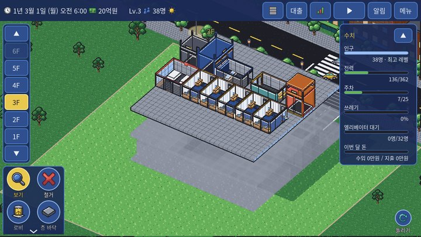
v3 화면: 왼쪽 아래 도구, 왼쪽 위 층 판, 오른쪽 위 수치 창 카메라 PC: 휠 = 확대·축소, 오른쪽 버튼 끌기 = 돌리기, 가운데 버튼 끌기(보기 도구에서는 왼쪽 끌기도) = 이동, Q/E = 돌리기(시설을 놓는 중에는 입구 방향 돌리기), PageUp/PageDown = 위·아래 층.
휴대폰: 두 손가락으로 끌면 이동, 벌리면 확대, 비틀면 회전합니다. 보기 도구에서는 한 손가락 끌기도 이동입니다.
설치 흐름 1. 도구를 고르면 미리보기가 따라다닙니다. 초록 = 놓을 수 있음, 빨강 = 안 됨(이유가 나옵니다).
2. 화면을 누르면 그 자리에 고정되고 설치 상자가 뜹니다(이름·크기·비용).
3. R·돌리기 버튼(PC는 Q/E도)으로 90도씩 돌리고, 끌어서 자리를 옮깁니다.
4. [설치]를 누르거나 초록 미리보기를 한 번 더 누르면 설치됩니다. [취소]를 한 번 누르면 고정만 풀리고, 한 번 더 누르면 보기 도구로 돌아갑니다(ESC도 같음).
로비·층 바닥·차로처럼 넓게 까는 것은 끌어서 범위를 정한 뒤 [설치]를 누릅니다.
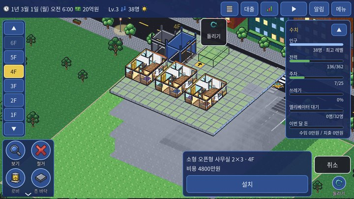
자리를 고정한 사무실 미리보기와 설치 상자 속도와 저장 위 줄 속도 버튼을 누를 때마다 정지 → 1배 → 2배 → 4배로 바뀝니다. PC는 스페이스(정지/다시), 1·2·4 키도 됩니다.
메뉴 > 저장하기에서 칸 5개에 이름을 붙여 저장합니다. 자동 저장은 매달 1일, 메인 화면으로 나갈 때, 앱을 닫거나 백그라운드로 보낼 때 됩니다. 불러오기 창 맨 위에 자동 저장 칸이 있습니다.
건물에 문제가 생기면 층 판에 빨간 「!」가 뜹니다. 자세한 내용은 「주차·차로·쓰레기」 장의 「문제 표시」를 보세요.
성능 기록 (렉 확인, PC) 게임이 끊기거나 느려지면 메뉴 > 「성능 기록: 끔」을 눌러 켭니다. 켜 두면 1초마다 fps·층·사람 수 등을 기록 파일(csv)에 적습니다. 렉이 나는 곳에서 몇 분 플레이한 뒤 메뉴 > 「기록 폴더 열기」로 폴더를 열어 가장 새 csv 파일을 보내 주세요. 다 보냈으면 다시 눌러 끕니다(파일은 30분마다 새로 만들고 최근 5개만 남깁니다).
자료 근거 data/guide.json chapters.start (게임 안 가이드 글)로비 를 1층에 넓게 깝니다 (칸당 460만원). 위층·지하 바닥은 모두 로비 넓이 안에만 깔리므로, 쓸 땅을 미리 로비로 잡아 두는 편이 좋습니다. 북쪽(도로 쪽) 가장자리에 건물 현관이 자동으로 생깁니다.엘리베이터 를 1층에 놓고 위로 늘립니다 (2개 층 2억 700만원, 늘린 층당 1700만원). 계단(690만원)은 싸지만 오르내린 층마다 스트레스 +8에 이동 전체 ×1.5라서, 오래 쓰기에는 엘리베이터가 낫습니다.2층 바닥 을 깔고(칸당 180만원) 엘리베이터 문 앞 가까이에 사무실·원룸 을 놓습니다. 엘리베이터 문 앞에서 8칸 안이면 거리 때문에 입주가 줄지 않습니다. 빈 칸은 저절로 복도가 됩니다.1층 로비에 가게·카페 (각 1억 400만원)를 놓습니다. 카페는 길만 이어지면 바로 영업하고, 가게는 세입자(업종)가 들어와야 월세를 냅니다. 인구가 늘면 쓰레기 흐름 을 갖춥니다: 2층 이상(또는 지하)에 하우스키핑 센터(6900만원) → 지하 바닥 + 분리수거장(4억 1400만원) → 북쪽 가장자리에 주차장 진입로(6900만원) → 지하에 차로. 하나라도 빠지면 더러움이 쌓이거나 건물 평가가 깎입니다. 전력 사용이 공급(기본 200)에 가까워지면 지하에 변전실 (1억 7200만원, +150)을 짓습니다. 오른쪽 위 수치 창의 전력 「지금 / 기준」을 보세요. 인구 250명이면 자정에 Lv.2 . 땅이 24×24로 넓어지고 주차 칸·호텔·식당 등이 풀립니다. Lv.3은 인구 900명 + 지원 시설 종류(노멀 2)가 필요합니다. 알아 두기 이 순서는 규칙표 값을 바탕으로 정리한 추천입니다. 정답이 하나인 것은 아닙니다.자료 근거 data/grid3d_rules.json costs·rooms·transports·economy.move_in_distance·systems.power·starsscripts/grid3d/grid_world.gd:check_slab·_slab_fill_column하루는 2,400틱입니다. 0틱이 오전 6시이고, 낮(오전 6시~자정)은 1시간에 110틱, 밤(자정~오전 6시)은 1시간에 70틱으로 빨리 지나갑니다. 날짜는 1,980틱(자정)에 바뀝니다.
시각(분) = 360 + 틱 × 1080 ÷ 1980 (0~1980틱) · 1440 + (틱 − 1980) × 360 ÷ 420 (1980~2400틱)
하루 일정표 일 틱 게임 시각 하는 일 하루 시작 0 오전 6:00 people.plan_day — 사람 일정·VIP 정하기 입주 확인 ① 165 오전 7:30 빈 사무실·주택·가게에 입주자가 들어올지 청소 직원 출발 300 오전 8:43 하우스키핑 센터 직원이 방을 돌며 쓰레기 수거 호텔 객실 청소 ① 522 오전 10:44 청소 필요 객실 → 빈 객실 수거 트럭 700 오후 12:21 분리수거장 → 트럭 (못 오면 건물 밖 수거) 호텔 객실 청소 ② 742 오후 12:44 입주 확인 ② 880 오후 2:00 호텔 체크인 1,210 오후 5:00 깨끗한 빈 객실에 손님 카트 운반 시작 1,500 오후 7:38 센터 창고 → 분리수거장 자정 (날짜 바뀜) 1,980 오전 12:00 하루 평가·정산(실제 달력)·레벨 확인·미션·날씨 거리 손님 나누기 2,250 오전 3:51 거리 상권 손님을 가게에 나눔 하루 장사 마감 2,260 오전 4:00 카페·식당 등 하루 수입
달력과 정산 게임은 1년 3월 1일(월)에 시작합니다. 달력은 시작할 때 고르며(실제 달력 · 한 달 7일 · 한 달 10일), 게임 도중에는 바꾸지 않습니다. 토·일은 휴일입니다. 사무실은 휴일에 출근하지 않고, 아이 있는 집은 휴일에 50% 확률로 가족 나들이를 갑니다. 정산 : 실제 달력은 매일 자정에 하루치, 한 달 7일·10일 달력은 매달 1일 자정에 지난달 날수만큼 정산합니다. 대출 이자는 어느 달력이든 매달 1일입니다.자동 저장은 매달 1일입니다. 자료 근거 data/grid3d_rules.json time·economy.settlement_by_calendarscripts/grid3d/grid_clock.gd:minutes·prev_month_daysscripts/grid3d/grid_game.gd:settlement·_settle_other땅 처음 땅은 20×20칸입니다. 레벨이 오를 때마다 가로·세로가 4칸씩 넓어집니다(도로가 있는 북쪽은 그대로). 시작 돈은 20억원입니다.
로비 (1층) 로비 도구로 1층에 끌어서 깝니다(칸당 460만원). 첫 로비는 땅 안 어디나, 그다음부터는 기존 로비와 붙어야 합니다. 로비는 1층의 바닥이자 통로이고, 1층에는 가게·카페·식당 같은 상업 시설, 택배 보관함, 장식, 계단·엘리베이터·진입로만 놓을 수 있습니다 (사무실·주택·호텔 객실은 2층 이상).
위층·지하 바닥 층 바닥 도구로 2층 이상과 지하에 바닥을 깝니다(칸당 180만원). 바닥은 아래층(지하는 위층) 바닥 위에만 깔리고, 모두 1층 로비 넓이 안이어야 합니다. 높은 층에 깔 때 그 아래 빈 층이 있으면 그 층들도 함께 깔리고, 확인 상자에 「아래 ○개 층 ○칸 자동 확장」과 합계 비용이 나옵니다. 로비는 자동으로 넓히지 않으므로 로비 밖이면 로비부터 넓히세요. 지상은 100층, 지하는 5층까지입니다.
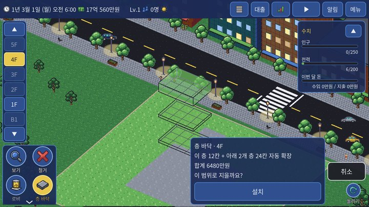
높은 층에 바닥을 깔 때: 아래 빈 층 자동 확장과 합계 비용 범위 깔기 로비·층 바닥을 끌어서 깔 때 이미 깔린 칸과 다른 시설이 있는 칸은 저절로 빠지고 나머지만 깔립니다. 상자에 「새로 깔 칸 ○칸 · 이미 있음 ○칸 제외」가 나옵니다. 층 바닥에서 아무것도 놓이지 않은 빈 칸은 모두 통로(복도)가 됩니다.
도구 칸당 놓는 곳 메모 로비 46 460만원 1층, 땅 안. 첫 로비는 어디나, 그다음은 기존 로비와 변이 붙게 1층의 바닥이자 통로. 하루 칸당 유지비 0.05(5,000원). 층 바닥 18 180만원 2층 이상·지하. 아래층(지하는 위층) 바닥 위, 1층 로비 넓이 안 아무것도 놓지 않은 칸은 모두 통로(복도)가 됩니다. 아래 빈 층은 함께 깔리고 합계 비용이 나옵니다. 차로 23 230만원 지하 층 바닥 위 빈 칸 차가 다니는 길. 사람도 어느 칸이나 걸어서 건널 수 있어 사람 길을 끊지 않습니다. 차는 앞 칸에 사람이 있으면 멈춥니다(최대 60틱 기다린 뒤 지나감).
층 규칙 한눈에 놓는 층 해당 시설 2층 이상 소형 오픈형 사무실, 파티션형 사무실, 임원실 + 직원석, 회의실 포함형, 대형 오픈형, 원룸(일자형), 분리형 원룸, 1.5룸, 투룸(소), 투룸(대), 쓰리룸(소), 쓰리룸(대), 포룸(소), 포룸(대), 1인 객실, 2인 객실, 프리미엄 객실, 파티룸, 스카이 라운지 어디나 (1층 로비 위 포함) 가게, 카페, 식당, 시네마 라운지, 택배 보관함, 쇼핑몰, 화분 정원, 쉼터 벤치, 조각상, 실내 분수, 수족관, 그랜드 피아노, 미디어 아트 기둥 1층을 뺀 모든 층 (지하 포함) 건강관리실, 방재센터, 하우스키핑 센터, 관리사무소 지하만 주차 칸, 분리수거장, 환승 통로, 변전실 맨 위층만 (위에 바닥이 없는 2층 이상) 전망대, 옥상 정원, 옥상 카페, 태양광 패널, 옥상 정자
알아 두기 이동 설비(계단·엘리베이터·진입로)는 층 규칙 없이 바닥이 있는 칸이면 놓을 수 있습니다. 1층 건물 현관 자리와 그 안쪽 칸에는 아무것도 놓을 수 없습니다.자료 근거 data/guide.json chapters.floorsscripts/grid3d/grid_world.gd:check_lobby·check_slab·room_floor_reason·door_zone놓는 법 사무실·주택 버튼을 누르면 종류 고르기 창이 열립니다(예: 소형 사무실 2×3, 원룸 2×3, 투룸 3×4). 가게는 2×2, 카페는 2×3칸입니다. 사무실·주택·호텔 객실은 2층 이상에만, 가게·카페는 1층(로비 위)에도 놓을 수 있습니다. 그 밖의 시설은 [시설 더보기]에 있습니다.
입구와 복도 모든 방에는 입구가 표시됩니다. 입구 앞 칸이 통로(빈 바닥, 1층은 로비)여야 놓을 수 있고, 안 되면 R로 돌려 문 방향을 바꿔 보세요. 통로를 막아 다른 곳에 못 가게 되는 자리에도 놓을 수 없습니다. 놓은 뒤 길이 끊기면(입구 앞이 막히거나 엘리베이터·계단으로 갈 길이 없으면) 입주자가 나갑니다.
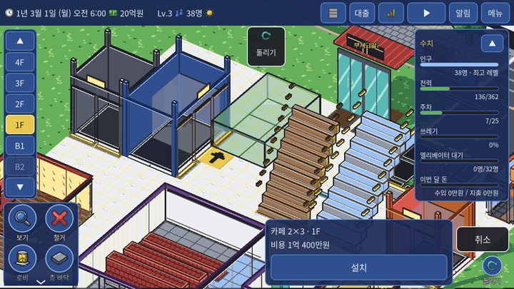
입구 방향이 보이는 방 미리보기 가게 업종과 합치기 플레이어는 빈 가게 칸만 짓고, 업종(16가지: 편의점·베이커리·헬스장·치과 등)은 들어오는 세입자가 정합니다. 큰 업종은 같은 층에 나란히 붙은 빈 가게 칸이 있어야 들어오며, 칸들이 직사각형으로 묶일 때만 합쳐집니다. 묶인 칸 하나가 비거나 철거되면 묶음이 풀립니다.
식당·카페·쇼핑몰 업종 식당(5가지: 한식·일식·중식·양식·분식·버거), 카페·옥상 카페(4가지: 로스터리·빵집·디저트·찻집), 쇼핑몰(4가지: 의류·잡화·전자제품·생활용품)도 업종이 있습니다. 가게처럼 지으면 정보창에 업종 후보 3가지가 나오고, 업종이 정해지기 전에는 영업하지 않습니다. [입주: …] 버튼으로 고르면 그 업종으로 바로 영업하고, 반나절쯤 안에 고르지 않으면 후보 중 하나가 무작위로 들어옵니다. 정해진 뒤에도 [업종 변경: …]으로 짓는 값의 50%를 내면 즉시 다른 업종으로 바꿀 수 있습니다(영업은 계속됩니다). 업종마다 손님이 찾는 정도·머무는 시간·객단가·직원 수가 조금씩 다르고, 가구·바닥색·간판도 달라집니다. 예전 저장의 식당·카페·쇼핑몰은 불러올 때 업종이 정해지며, 다시 불러와도 같습니다.
임대료와 입주 방을 누르면 정보창에서 [임대료 올리기]·[임대료 내리기]로 등급(프리미엄·보통·알뜰·특가)을 바꿉니다. 비쌀수록 수입은 많지만 입주가 늦고, 빈 방에는 예상 입주 일수가 나옵니다. 사무실 등은 월세, 주택은 처음 입주할 때 한 번 분양 대금, 카페·식당은 매일 장사 수입을 냅니다. 엘리베이터 문 앞에서 8칸보다 멀면 입주가 점점 어려워집니다.
임대 등급 4단계 등급 수입 배율 입주 확률(한 번) 호텔 체크인 확률 예상 입주(가까운 방, 노멀) 프리미엄 ×1.35 35% 45% 1.43일 보통 ×1 70% 75% 0.71일 알뜰 ×0.7 90% 90% 0.56일 특가 ×0.45 100% 100% 0.5일
입주 확인은 하루 2번(오전 7:30 · 오후 2:00)입니다. 새로 지은 방은 처음 입주 등급이 「보통」입니다. 입주한 방도 등급을 바꿀 수 있고, 다음 정산부터 적용됩니다.
자료 근거 data/guide.json chapters.roomsdata/grid3d_rules.json economyscripts/grid3d/grid_economy.gd:move_in_chance·expected_move_in_days·set_tier방·시설 45가지와 이동 설비 7가지 전부입니다. 분류를 누르거나 이름을 쳐서 바로 찾으세요.
이름으로 찾기 해금 모든 레벨 Lv.1에 지을 수 있는 것 Lv.2까지 Lv.3까지
전체 52 사무실 5 주택 9 호텔 3 상업·편의 6 관리·위생 7 주차·교통 3 옥상·전망 5 이동 설비 6 장식 8
크기 2×3칸 설치비 480 4800만원 놓는 층 2층 이상 유지비 없음 해금 Lv.1 인원 2~3명 · 사무실 (평일 출퇴근) 월세(하루) 프리미엄 45 · 보통 33 · 알뜰 23 · 특가 15 입구 있음 (입구 앞 칸이 통로여야 함) 전기 사용 5 노후 하루 +0.8% 효과를 받는 쪽 주변 시설의 효과를 받는 방입니다 (이용자 분류는 「고급 > 시설 효과 계산」)
평일 오전 7:15~오전 10:15 출근, 점심(오후 12:00~오후 12:52, 60% 확률로 가게·카페로), 오후 4:48~오후 7:30 퇴근. 휴일(토·일)은 쉽니다. 크기 3×4칸 설치비 970 9700만원 놓는 층 2층 이상 유지비 없음 해금 Lv.1 인원 3~5명 · 사무실 (평일 출퇴근) 월세(하루) 프리미엄 89 · 보통 66 · 알뜰 46 · 특가 30 입구 있음 (입구 앞 칸이 통로여야 함) 전기 사용 10 노후 하루 +0.8% 효과를 받는 쪽 주변 시설의 효과를 받는 방입니다 (이용자 분류는 「고급 > 시설 효과 계산」)
평일 오전 7:15~오전 10:15 출근, 점심(오후 12:00~오후 12:52, 60% 확률로 가게·카페로), 오후 4:48~오후 7:30 퇴근. 휴일(토·일)은 쉽니다. 크기 4×4칸 설치비 1,290 1억 2900만원 놓는 층 2층 이상 유지비 없음 해금 Lv.2 인원 4~6명 · 사무실 (평일 출퇴근) 월세(하루) 프리미엄 119 · 보통 88 · 알뜰 62 · 특가 40 입구 있음 (입구 앞 칸이 통로여야 함) 전기 사용 13 노후 하루 +0.8% 효과를 받는 쪽 주변 시설의 효과를 받는 방입니다 (이용자 분류는 「고급 > 시설 효과 계산」)
평일 오전 7:15~오전 10:15 출근, 점심(오후 12:00~오후 12:52, 60% 확률로 가게·카페로), 오후 4:48~오후 7:30 퇴근. 휴일(토·일)은 쉽니다. 크기 5×4칸 설치비 1,610 1억 6100만원 놓는 층 2층 이상 유지비 없음 해금 Lv.2 인원 4~6명 · 사무실 (평일 출퇴근) 월세(하루) 프리미엄 148 · 보통 110 · 알뜰 77 · 특가 50 입구 있음 (입구 앞 칸이 통로여야 함) 전기 사용 17 노후 하루 +0.8% 효과를 받는 쪽 주변 시설의 효과를 받는 방입니다 (이용자 분류는 「고급 > 시설 효과 계산」)
평일 오전 7:15~오전 10:15 출근, 점심(오후 12:00~오후 12:52, 60% 확률로 가게·카페로), 오후 4:48~오후 7:30 퇴근. 휴일(토·일)은 쉽니다. 크기 6×6칸 설치비 2,900 2억 9000만원 놓는 층 2층 이상 유지비 없음 해금 Lv.3 인원 9~12명 · 사무실 (평일 출퇴근) 월세(하루) 프리미엄 267 · 보통 198 · 알뜰 139 · 특가 89 입구 있음 (입구 앞 칸이 통로여야 함) 전기 사용 30 노후 하루 +0.8% 효과를 받는 쪽 주변 시설의 효과를 받는 방입니다 (이용자 분류는 「고급 > 시설 효과 계산」)
평일 오전 7:15~오전 10:15 출근, 점심(오후 12:00~오후 12:52, 60% 확률로 가게·카페로), 오후 4:48~오후 7:30 퇴근. 휴일(토·일)은 쉽니다. 크기 2×3칸 설치비 450 4500만원 놓는 층 2층 이상 유지비 없음 해금 Lv.1 인원 1명 · 주민 월세(하루) 프리미엄 26 · 보통 20 · 알뜰 14 · 특가 9 입구 있음 (입구 앞 칸이 통로여야 함) 전기 사용 2 노후 하루 +0.8% 효과를 받는 쪽 주변 시설의 효과를 받는 방입니다 (이용자 분류는 「고급 > 시설 효과 계산」)
주민은 하루 60% 확률로 외출(오전 7:22~오전 11:07 나감 → 오후 3:30~오후 9:30 돌아옴), 나갈 때 50% 확률로 가게에 들릅니다. 크기 2×4칸 설치비 600 6000만원 놓는 층 2층 이상 유지비 없음 해금 Lv.1 인원 1명 · 주민 월세(하루) 프리미엄 35 · 보통 26 · 알뜰 18 · 특가 12 입구 있음 (입구 앞 칸이 통로여야 함) 전기 사용 2 노후 하루 +0.8% 효과를 받는 쪽 주변 시설의 효과를 받는 방입니다 (이용자 분류는 「고급 > 시설 효과 계산」)
주민은 하루 60% 확률로 외출(오전 7:22~오전 11:07 나감 → 오후 3:30~오후 9:30 돌아옴), 나갈 때 50% 확률로 가게에 들릅니다. 크기 3×4칸 설치비 970 9700만원 놓는 층 2층 이상 유지비 없음 해금 Lv.1 인원 2~3명 · 주민 분양가 프리미엄 1,970 · 보통 1,460 · 알뜰 1,020 · 특가 660 입구 있음 (입구 앞 칸이 통로여야 함) 전기 사용 3 노후 하루 +0.8% 효과를 받는 쪽 주변 시설의 효과를 받는 방입니다 (이용자 분류는 「고급 > 시설 효과 계산」)
주민은 하루 60% 확률로 외출(오전 7:22~오전 11:07 나감 → 오후 3:30~오후 9:30 돌아옴), 나갈 때 50% 확률로 가게에 들릅니다. 3명 이상 들어오면 3번째부터 아이가 되고, 이 집은 「아이 있는 가족」으로 셉니다(평일 등교·하교, 휴일 가족 나들이). 크기 3×3칸 설치비 670 6700만원 놓는 층 2층 이상 유지비 없음 해금 Lv.2 인원 1~2명 · 주민 월세(하루) 프리미엄 39 · 보통 29 · 알뜰 20 · 특가 13 입구 있음 (입구 앞 칸이 통로여야 함) 전기 사용 2 노후 하루 +0.8% 효과를 받는 쪽 주변 시설의 효과를 받는 방입니다 (이용자 분류는 「고급 > 시설 효과 계산」)
주민은 하루 60% 확률로 외출(오전 7:22~오전 11:07 나감 → 오후 3:30~오후 9:30 돌아옴), 나갈 때 50% 확률로 가게에 들릅니다. 크기 4×4칸 설치비 1,290 1억 2900만원 놓는 층 2층 이상 유지비 없음 해금 Lv.2 인원 2~3명 · 주민 분양가 프리미엄 2,730 · 보통 2,020 · 알뜰 1,410 · 특가 910 입구 있음 (입구 앞 칸이 통로여야 함) 전기 사용 4 노후 하루 +0.8% 효과를 받는 쪽 주변 시설의 효과를 받는 방입니다 (이용자 분류는 「고급 > 시설 효과 계산」)
주민은 하루 60% 확률로 외출(오전 7:22~오전 11:07 나감 → 오후 3:30~오후 9:30 돌아옴), 나갈 때 50% 확률로 가게에 들릅니다. 3명 이상 들어오면 3번째부터 아이가 되고, 이 집은 「아이 있는 가족」으로 셉니다(평일 등교·하교, 휴일 가족 나들이). 크기 5×4칸 설치비 1,610 1억 6100만원 놓는 층 2층 이상 유지비 없음 해금 Lv.2 인원 3~4명 · 주민 분양가 프리미엄 3,510 · 보통 2,600 · 알뜰 1,820 · 특가 1,170 입구 있음 (입구 앞 칸이 통로여야 함) 전기 사용 5 노후 하루 +0.8% 효과를 받는 쪽 주변 시설의 효과를 받는 방입니다 (이용자 분류는 「고급 > 시설 효과 계산」)
주민은 하루 60% 확률로 외출(오전 7:22~오전 11:07 나감 → 오후 3:30~오후 9:30 돌아옴), 나갈 때 50% 확률로 가게에 들릅니다. 3명 이상 들어오면 3번째부터 아이가 되고, 이 집은 「아이 있는 가족」으로 셉니다(평일 등교·하교, 휴일 가족 나들이). 크기 5×5칸 설치비 2,010 2억 100만원 놓는 층 2층 이상 유지비 없음 해금 Lv.3 인원 3~5명 · 주민 분양가 프리미엄 4,560 · 보통 3,380 · 알뜰 2,370 · 특가 1,520 입구 있음 (입구 앞 칸이 통로여야 함) 전기 사용 6 노후 하루 +0.8% 효과를 받는 쪽 주변 시설의 효과를 받는 방입니다 (이용자 분류는 「고급 > 시설 효과 계산」)
주민은 하루 60% 확률로 외출(오전 7:22~오전 11:07 나감 → 오후 3:30~오후 9:30 돌아옴), 나갈 때 50% 확률로 가게에 들릅니다. 3명 이상 들어오면 3번째부터 아이가 되고, 이 집은 「아이 있는 가족」으로 셉니다(평일 등교·하교, 휴일 가족 나들이). 크기 5×6칸 설치비 2,420 2억 4200만원 놓는 층 2층 이상 유지비 없음 해금 Lv.3 인원 4~5명 · 주민 분양가 프리미엄 5,670 · 보통 4,200 · 알뜰 2,940 · 특가 1,890 입구 있음 (입구 앞 칸이 통로여야 함) 전기 사용 8 노후 하루 +0.8% 효과를 받는 쪽 주변 시설의 효과를 받는 방입니다 (이용자 분류는 「고급 > 시설 효과 계산」)
주민은 하루 60% 확률로 외출(오전 7:22~오전 11:07 나감 → 오후 3:30~오후 9:30 돌아옴), 나갈 때 50% 확률로 가게에 들릅니다. 3명 이상 들어오면 3번째부터 아이가 되고, 이 집은 「아이 있는 가족」으로 셉니다(평일 등교·하교, 휴일 가족 나들이). 포룸(대) 주택 Lv.4 (지금 판 최고 레벨은 3 — 지을 수 없음) 크기 6×6칸 설치비 2,900 2억 9000만원 놓는 층 2층 이상 유지비 없음 해금 Lv.4 (지금 판 최고 레벨은 3 — 지을 수 없음) 인원 4~6명 · 주민 분양가 프리미엄 7,100 · 보통 5,260 · 알뜰 3,680 · 특가 2,370 입구 있음 (입구 앞 칸이 통로여야 함) 전기 사용 9 노후 하루 +0.8% 효과를 받는 쪽 주변 시설의 효과를 받는 방입니다 (이용자 분류는 「고급 > 시설 효과 계산」)
주민은 하루 60% 확률로 외출(오전 7:22~오전 11:07 나감 → 오후 3:30~오후 9:30 돌아옴), 나갈 때 50% 확률로 가게에 들릅니다. 3명 이상 들어오면 3번째부터 아이가 되고, 이 집은 「아이 있는 가족」으로 셉니다(평일 등교·하교, 휴일 가족 나들이). 크기 1×2칸 설치비 280 2800만원 놓는 층 2층 이상 유지비 없음 해금 Lv.2 인원 1명 · 호텔 손님 1박 프리미엄 27 · 보통 20 · 알뜰 14 · 특가 9 입구 있음 (입구 앞 칸이 통로여야 함) 전기 사용 1 노후 하루 +0.8% 효과를 받는 쪽 주변 시설의 효과를 받는 방입니다 (이용자 분류는 「고급 > 시설 효과 계산」)
손님은 매일 오후 5:00에 깨끗한 빈 객실에 들고, 다음 날 오전 7:07~오전 10:15에 나가며 숙박비를 냅니다. 나간 객실은 「청소 필요」가 되고 하우스키핑 센터가 청소해야 다시 손님을 받습니다. 크기 2×2칸 설치비 460 4600만원 놓는 층 2층 이상 유지비 없음 해금 Lv.2 인원 2명 · 호텔 손님 1박 프리미엄 51 · 보통 38 · 알뜰 27 · 특가 17 입구 있음 (입구 앞 칸이 통로여야 함) 전기 사용 2 노후 하루 +0.8% 효과를 받는 쪽 주변 시설의 효과를 받는 방입니다 (이용자 분류는 「고급 > 시설 효과 계산」)
손님은 매일 오후 5:00에 깨끗한 빈 객실에 들고, 다음 날 오전 7:07~오전 10:15에 나가며 숙박비를 냅니다. 나간 객실은 「청소 필요」가 되고 하우스키핑 센터가 청소해야 다시 손님을 받습니다. 크기 2×3칸 설치비 1,040 1억 400만원 놓는 층 2층 이상 유지비 없음 해금 Lv.3 인원 2명 · 호텔 손님 1박 프리미엄 89 · 보통 66 · 알뜰 46 · 특가 30 입구 있음 (입구 앞 칸이 통로여야 함) 전기 사용 3 노후 하루 +0.8% 효과를 받는 쪽 주변 시설의 효과를 받는 방입니다 (이용자 분류는 「고급 > 시설 효과 계산」)
손님은 매일 오후 5:00에 깨끗한 빈 객실에 들고, 다음 날 오전 7:07~오전 10:15에 나가며 숙박비를 냅니다. 나간 객실은 「청소 필요」가 되고 하우스키핑 센터가 청소해야 다시 손님을 받습니다. 크기 2×2칸 설치비 1,040 1억 400만원 놓는 층 어디나 (1층 로비 위 포함) 유지비 없음 해금 Lv.1 인원 업종에 따라 직원 수가 정해짐 월세(하루) 프리미엄 68 · 보통 50 · 알뜰 35 · 특가 22 입구 있음 (입구 앞 칸이 통로여야 함) 전기 사용 5 노후 하루 +0.8% 편의 효과 없음 업종이 정해지기 전 빈 가게 칸 — 업종이 정해지면 그 업종의 효과(가게 업종 표)를 냅니다
빈 가게 칸입니다. 업종(16가지)은 들어오는 세입자가 정하고, 큰 업종은 옆의 빈 가게 칸과 직사각형으로 묶여 들어옵니다. 크기 2×3칸 설치비 1,040 1억 400만원 놓는 층 어디나 (1층 로비 위 포함) 유지비 없음 해금 Lv.1 인원 2~4명 · 직원이 일하는 가게 수입 손님 1명 1.6 − 하루 운영비 16 입구 있음 (입구 앞 칸이 통로여야 함) 전기 사용 8 노후 하루 +0.8% 편의 효과 사무실 직원(만족 1) · 1·2인 가구(만족 0.5) · 아이 있는 가족(만족 0.3) · 노인 가구(만족 0.3) · 출장 손님(만족 0.5) · 관광 손님(만족 0.5) · 상가 손님(머묾 0.2, 지출 0.2)
업종 4가지(로스터리 카페·빵집 카페·디저트 카페·찻집) 중 하나로 영업합니다 — 지으면 후보 3가지 중에서 고를 수 있습니다(식당·카페·쇼핑몰 업종 절). 직접 운영: 로비에서 길만 이어지면 바로 영업합니다. 하루 수입 = 손님 수 × 1.6 − 운영비 16 (손님 10명부터 이익). 크기 4×4칸 설치비 1,260 1억 2600만원 놓는 층 2층 이상 유지비 없음 해금 Lv.2 인원 2~3명 · 직원이 일하는 가게 수입 손님 1명 4.5 − 하루 운영비 40 입구 있음 (입구 앞 칸이 통로여야 함) 전기 사용 6 노후 하루 +0.8% 편의 효과 사무실 직원(만족 0.3) · 1·2인 가구(만족 0.3) · 아이 있는 가족(만족 0.3) · 관광 손님(만족 0.2)
직접 운영: 로비에서 길만 이어지면 바로 영업합니다. 하루 수입 = 손님 수 × 4.5 − 운영비 40 (손님 9명부터 이익). 크기 3×4칸 설치비 2,070 2억 700만원 놓는 층 어디나 (1층 로비 위 포함) 유지비 없음 해금 Lv.2 인원 2~4명 · 직원이 일하는 가게 수입 손님 1명 3.4 − 하루 운영비 30 입구 있음 (입구 앞 칸이 통로여야 함) 전기 사용 10 노후 하루 +1.2% 편의 효과 사무실 직원(만족 1) · 1·2인 가구(만족 0.5) · 아이 있는 가족(만족 0.5) · 노인 가구(만족 0.5) · 출장 손님(만족 1) · 관광 손님(만족 1) · 상가 손님(지출 0.2)
업종 5가지(한식당·일식당·중식당·양식 레스토랑·분식·버거집) 중 하나로 영업합니다 — 지으면 후보 3가지 중에서 고를 수 있습니다(식당·카페·쇼핑몰 업종 절). 직접 운영: 로비에서 길만 이어지면 바로 영업합니다. 하루 수입 = 손님 수 × 3.4 − 운영비 30 (손님 9명부터 이익). 크기 4×4칸 설치비 3,450 3억 4500만원 놓는 층 어디나 (1층 로비 위 포함) 유지비 하루 33.25 332.5만원 해금 Lv.2 인원 3~4명 · 직원이 일하는 가게 수입 손님 1명 0.45 − 하루 운영비 25 입구 있음 (입구 앞 칸이 통로여야 함) 전기 사용 15 노후 하루 +0.8% 편의 효과 사무실 직원(만족 0.5) · 1·2인 가구(만족 0.5, 입주 0.3) · 아이 있는 가족(만족 1, 입주 0.3) · 노인 가구(만족 0.3) · 관광 손님(만족 1) · 상가 손님(머묾 0.3, 지출 0.5) · VIP(지출 0.3)
업종 4가지(의류관·잡화관·전자제품관·생활용품관) 중 하나로 영업합니다 — 지으면 후보 3가지 중에서 고를 수 있습니다(식당·카페·쇼핑몰 업종 절). 직접 운영: 로비에서 길만 이어지면 바로 영업합니다. 하루 수입 = 손님 수 × 0.45 − 운영비 25 (손님 56명부터 이익). 층이 높아도 거리 손님이 줄지 않고, 위아래 3개 층 안의 가게·식당은 거리 손님 ×1.5. 크기 4×5칸 · 2개 층 높이 설치비 5,520 5억 5200만원 놓는 층 어디나 (1층 로비 위 포함) 유지비 없음 해금 Lv.3 인원 2~3명 · 직원이 일하는 가게 수입 손님 1명 5 − 하루 운영비 90 입구 있음 (입구 앞 칸이 통로여야 함) 전기 사용 10 노후 하루 +0.8% 편의 효과 사무실 직원(만족 0.2) · 1·2인 가구(만족 0.5) · 아이 있는 가족(만족 0.5) · 관광 손님(만족 0.5) · 상가 손님(머묾 0.3, 지출 0.3) · VIP(머묾 0.3)
직접 운영: 로비에서 길만 이어지면 바로 영업합니다. 하루 수입 = 손님 수 × 5 − 운영비 90 (손님 18명부터 이익). 2개 층 높이라 위층에도 바닥이 있어야 합니다. 크기 1×2칸 설치비 340 3400만원 놓는 층 어디나 (1층 로비 위 포함) 유지비 하루 6.75 67.5만원 해금 Lv.1 수입 수입 없음 입구 있음 (입구 앞 칸이 통로여야 함) 전기 사용 1 노후 하루 +0.8% 편의 효과 사무실 직원(만족 0.3) · 1·2인 가구(만족 1) · 아이 있는 가족(만족 0.5) · 노인 가구(만족 0.5)
칸당 하루 택배 2개를 맡습니다. 보관함으로 택배를 받은 사무실·주택은 그날 스트레스 −10. 가득 차면 기사가 직접 올라갑니다. 3레벨 조건의 지원 시설로 셉니다. 크기 2×3칸 설치비 690 6900만원 놓는 층 1층을 뺀 모든 층 (지하 포함) 유지비 하루 30 300만원 해금 Lv.1 수입 수입 없음 입구 있음 (입구 앞 칸이 통로여야 함) 전기 사용 2 노후 하루 +0.8% 편의 효과 없음 효과는 쓰레기 흐름(위생)으로 — 범위 안 방 청소·센터 창고·카트 운반
매일 오전 8:43에 직원 5명이 나와 위아래 범위(이지 3·노멀 2·하드 1층) 안의 더러운 방부터 한 사람당 4곳(하루 최대 20곳)을 한 번에 20씩 치웁니다. 모은 쓰레기는 센터 창고(600)에, 오후 7:38부터 카트로 분리수거장에 옮깁니다. 호텔 객실 청소도 맡습니다: 오전 10:44 · 오후 12:44 두 번, 그때마다 센터 하나당 객실 5곳까지. 3레벨 조건의 지원 시설로 셉니다. 크기 2×3칸 설치비 920 9200만원 놓는 층 1층을 뺀 모든 층 (지하 포함) 유지비 하루 33.25 332.5만원 해금 Lv.1 수입 수입 없음 입구 있음 (입구 앞 칸이 통로여야 함) 전기 사용 2 노후 하루 +0.8% 편의 효과 사무실 직원(입주 0.2) · 1·2인 가구(만족 0.3, 입주 0.3) · 아이 있는 가족(만족 0.3, 입주 0.3) · 노인 가구(만족 0.5, 입주 0.3)
위아래 15개 층 안에서 노후도 50% 이상(또는 고장)인 곳을 하루 6곳까지 고칩니다(1곳 −35, 수리비 20). 더러움과는 관계없습니다. 3레벨 조건의 지원 시설로 셉니다. 크기 2×2칸 설치비 1,720 1억 7200만원 놓는 층 지하만 유지비 하루 16.75 167.5만원 해금 Lv.1 수입 수입 없음 입구 있음 (입구 앞 칸이 통로여야 함) 노후 하루 +0.8% 편의 효과 없음 변전실 — 전력 공급을 늘리는 시설(편의 효과 없음)
전력 공급 +150 (도시 전력망 기본 200에 더함). 크기 3×3칸 설치비 4,140 4억 1400만원 놓는 층 지하만 유지비 하루 150 1500만원 해금 Lv.1 수입 수입 없음 입구 있음 (입구 앞 칸이 통로여야 함) 노후 하루 +0.8% 편의 효과 없음 효과는 쓰레기 흐름(위생)으로 — 쓰레기 보관·수거 트럭
용량 1,600. 같은 층 진입로 출구에서 차로가 이어지면 매일 오후 12:21에 트럭이 최대 2,000 가져갑니다. 가득 차면 그 층과 위아래 1개 층 방이 매일 더러움 +6. 3레벨 조건의 지원 시설로 셉니다. 크기 2×3칸 설치비 1,380 1억 3800만원 놓는 층 1층을 뺀 모든 층 (지하 포함) 유지비 하루 60 600만원 해금 Lv.2 수입 수입 없음 입구 있음 (입구 앞 칸이 통로여야 함) 전기 사용 3 노후 하루 +0.8% 편의 효과 사무실 직원(입주 0.3) · 1·2인 가구(입주 0.2) · 아이 있는 가족(입주 0.3) · 노인 가구(입주 0.3) · 관광 손님(입주 0.2)
크기 3×3칸 설치비 4,140 4억 1400만원 놓는 층 1층을 뺀 모든 층 (지하 포함) 유지비 하루 50 500만원 해금 Lv.2 수입 수입 없음 입구 있음 (입구 앞 칸이 통로여야 함) 전기 사용 8 노후 하루 +0.8% 편의 효과 사무실 직원(만족 0.5) · 1·2인 가구(만족 0.3) · 아이 있는 가족(만족 0.5) · 노인 가구(만족 1, 입주 0.5) · 출장 손님(만족 0.2) · 관광 손님(만족 0.2)
크기 3×3칸 설치비 690 6900만원 + 늘린 층당 230 2300만원 층 수 최대 6개 층 (최대로 늘리면 1억 6100만원) 유지비 하루 30 300만원 해금 Lv.1 노후 하루 +0.8% 편의 효과 없음 주차 칸·차로를 바깥 도로와 잇는 통로 — 효과는 주차 계산과 쓰레기 수거 트럭으로
1층 도로 쪽(북쪽) 건물 가장자리에서 지하로 내려가는 세로 통로. 사람은 타지 않습니다. 지하층마다 문 쪽으로 차가 나옵니다. 크기 1×2칸 설치비 50 500만원 놓는 층 지하만 유지비 없음 해금 Lv.2 수입 수입 없음 입구 없음 (둘레가 통로·차로와 닿으면 됨) 노후 하루 +0.8% 편의 효과 없음 효과는 주차 계산으로 — 차 있는 입주자의 필요 칸·차 손님·주차비
벽 없는 흰 선 칸. 옆에 차로가 있고 그 차로가 같은 층 진입로 출구까지 이어져야 「쓸 수 있음」이 됩니다. 환승 통로 주차·교통 Lv.4 (지금 판 최고 레벨은 3 — 지을 수 없음) 크기 4×6칸 설치비 9,200 9억 2000만원 놓는 층 지하만 유지비 하루 300 3000만원 해금 Lv.4 (지금 판 최고 레벨은 3 — 지을 수 없음) 수입 수입 없음 입구 있음 (입구 앞 칸이 통로여야 함) 노후 하루 +0.8% 편의 효과 사무실 직원(만족 0.5, 입주 0.5) · 1·2인 가구(입주 0.3) · 출장 손님(만족 0.5) · 관광 손님(만족 0.5) · 상가 손님(지출 0.5)
크기 2×2칸 설치비 340 3400만원 놓는 층 맨 위층만 (위에 바닥이 없는 2층 이상) 유지비 하루 3.25 32.5만원 해금 Lv.1 수입 수입 없음 입구 있음 (입구 앞 칸이 통로여야 함) 노후 하루 +0.8% 편의 효과 사무실 직원(만족 0.3) · 1·2인 가구(만족 0.5) · 아이 있는 가족(만족 0.5) · 노인 가구(만족 1) · 관광 손님(만족 0.3) · VIP(머묾 0.2)
아래 3개 층 안의 사무실·주택 평가 스트레스 −12. 이 시설 위에는 바닥을 깔 수 없습니다(더 높이 올리려면 먼저 철거). 크기 2×2칸 설치비 690 6900만원 놓는 층 맨 위층만 (위에 바닥이 없는 2층 이상) 유지비 없음 해금 Lv.1 수입 수입 없음 입구 없음 (둘레가 통로·차로와 닿으면 됨) 노후 하루 +0.8% 편의 효과 없음 태양광 패널 — 전력 공급을 늘리는 시설(편의 효과 없음)
전력 공급 칸당 +3 (이 크기면 +12). 이 시설 위에는 바닥을 깔 수 없습니다(더 높이 올리려면 먼저 철거). 크기 2×3칸 설치비 1,380 1억 3800만원 놓는 층 맨 위층만 (위에 바닥이 없는 2층 이상) 유지비 없음 해금 Lv.2 인원 2~3명 · 직원이 일하는 가게 수입 손님 1명 1.8 − 하루 운영비 18 입구 있음 (입구 앞 칸이 통로여야 함) 전기 사용 6 노후 하루 +0.8% 편의 효과 사무실 직원(만족 0.5) · 1·2인 가구(만족 0.5) · 아이 있는 가족(만족 0.3) · 관광 손님(만족 0.5) · 상가 손님(머묾 0.2)
업종 4가지(로스터리 카페·빵집 카페·디저트 카페·찻집) 중 하나로 영업합니다 — 지으면 후보 3가지 중에서 고를 수 있습니다(식당·카페·쇼핑몰 업종 절). 직접 운영: 로비에서 길만 이어지면 바로 영업합니다. 하루 수입 = 손님 수 × 1.8 − 운영비 18 (손님 10명부터 이익). 이 시설 위에는 바닥을 깔 수 없습니다(더 높이 올리려면 먼저 철거). 크기 3×4칸 설치비 2,880 2억 8800만원 놓는 층 2층 이상 유지비 하루 16.75 167.5만원 해금 Lv.3 인원 2~3명 · 직원이 일하는 가게 수입 손님 1명 3.6 − 하루 운영비 30 입구 있음 (입구 앞 칸이 통로여야 함) 전기 사용 8 노후 하루 +0.8% 편의 효과 사무실 직원(만족 0.5) · 1·2인 가구(만족 0.3) · 출장 손님(만족 0.5) · 관광 손님(만족 1) · 상가 손님(머묾 0.3) · VIP(머묾 0.5, 지출 0.5)
직접 운영: 로비에서 길만 이어지면 바로 영업합니다. 하루 수입 = 손님 수 × 3.6 − 운영비 30 (손님 9명부터 이익). 10층 이상에만 놓을 수 있습니다. 전망 덕분에 높은 층이어도 거리 손님이 줄지 않습니다. 전망대 옥상·전망 Lv.5 (지금 판 최고 레벨은 3 — 지을 수 없음) 크기 4×4칸 설치비 27,600 27억 6000만원 놓는 층 맨 위층만 (위에 바닥이 없는 2층 이상) 유지비 없음 해금 Lv.5 (지금 판 최고 레벨은 3 — 지을 수 없음) 수입 수입 없음 입구 있음 (입구 앞 칸이 통로여야 함) 노후 하루 +0.8% 편의 효과 아이 있는 가족(만족 0.3) · 관광 손님(만족 1, 입주 0.5) · 상가 손님(머묾 0.3) · VIP(머묾 0.5)
건물에 1개까지. 이 시설 위에는 바닥을 깔 수 없습니다(더 높이 올리려면 먼저 철거). 크기 2×2칸 설치비 69 690만원 + 늘린 층당 46 460만원 층 수 최대 6개 층 (최대로 늘리면 2530만원) 유지비 없음 해금 Lv.1 부담 층당 스트레스 +8 · 한 층 24틱 노후 하루 +0.8% 편의 효과 없음 이동 수단(계단·엘리베이터·에스컬레이터) — 걷는 거리·기다림은 동선·스트레스 계산에 이미 들어감
한 층에 24틱, 오르내린 층마다 스트레스 +8. 계단을 한 번이라도 쓴 이동은 그 이동의 스트레스 전체가 ×1.5. 크기 2×3칸 설치비 340 3400만원 층 수 2개 층 (늘릴 수 없음) 유지비 하루 15 150만원 해금 Lv.1 부담 층당 스트레스 +2 · 한 층 12틱 전기 사용 3 노후 하루 +0.8% 편의 효과 없음 이동 수단(계단·엘리베이터·에스컬레이터) — 걷는 거리·기다림은 동선·스트레스 계산에 이미 들어감
한 층에 12틱, 오르내린 층마다 스트레스 +2. 에스컬레이터는 계단으로 보지 않아 ×1.5 벌점이 없습니다. 크기 2×2칸 설치비 2,070 2억 700만원 + 늘린 층당 170 1700만원 층 수 최대 25개 층 (최대로 늘리면 5억 9800만원) 유지비 하루 30 300만원 해금 Lv.1 정원·속도 8명 · 한 층 10틱 전기 사용 3 노후 하루 +1.2% 편의 효과 없음 이동 수단(계단·엘리베이터·에스컬레이터) — 걷는 거리·기다림은 동선·스트레스 계산에 이미 들어감
카 1대, 정원 8명, 한 층에 10틱(약 5분), 문 열림 8틱. 기다리는 동안 1틱마다 스트레스 +1. 크기 2×2칸 설치비 1,380 1억 3800만원 + 늘린 층당 140 1400만원 층 수 최대 25개 층 (최대로 늘리면 4억 6000만원) 유지비 하루 30 300만원 해금 Lv.2 정원·속도 8명 · 한 층 10틱 전기 사용 3 노후 하루 +1.2% 편의 효과 없음 이동 수단(계단·엘리베이터·에스컬레이터) — 걷는 거리·기다림은 동선·스트레스 계산에 이미 들어감
카 1대, 정원 8명, 한 층에 10틱(약 5분), 문 열림 8틱. 손님·입주자는 타지 않습니다. 가게 직원·배달 기사·청소·운반 직원은 길을 고를 때 이 엘리베이터 비용을 ×0.4로 봐서 먼저 탑니다. 기다리는 동안 1틱마다 스트레스 +1. 크기 2×2칸 설치비 2,691 2억 6910만원 + 늘린 층당 221 2210만원 층 수 최대 25개 층 (최대로 늘리면 7억 7740만원) 유지비 하루 30 300만원 해금 Lv.2 정원·속도 8명 · 한 층 10틱 전기 사용 3 노후 하루 +1.2% 편의 효과 없음 이동 수단(계단·엘리베이터·에스컬레이터) — 걷는 거리·기다림은 동선·스트레스 계산에 이미 들어감
카 1대, 정원 8명, 한 층에 10틱(약 5분), 문 열림 8틱. 마주 보는 두 면에 문이 있습니다. 기다리는 동안 1틱마다 스트레스 +1. 크기 2×3칸 설치비 4,020 4억 200만원 + 늘린 층당 290 2900만원 층 수 최대 60개 층 (최대로 늘리면 20억 8400만원) 유지비 하루 60 600만원 해금 Lv.3 정원·속도 16명 · 한 층 4틱 전기 사용 3 노후 하루 +1.2% 편의 효과 없음 이동 수단(계단·엘리베이터·에스컬레이터) — 걷는 거리·기다림은 동선·스트레스 계산에 이미 들어감
카 1대, 정원 16명, 한 층에 4틱(약 2분), 문 열림 8틱. 양 끝 층에만 섭니다. 기다리는 동안 1틱마다 스트레스 +1. 화분 정원 장식 미션 「첫 도약」(Lv.2 달성) 크기 1×1칸 설치비 120 1200만원 놓는 층 어디나 (1층 로비 위 포함) 유지비 없음 해금 미션 「첫 도약」(Lv.2 달성) 수입 수입 없음 입구 있음 (입구 앞 칸이 통로여야 함) 노후 하루 +0.8% 편의 효과 사무실 직원(만족 0.2) · 1·2인 가구(만족 0.2) · 노인 가구(만족 0.3) · 상가 손님(머묾 0.1)
반경 2.5칸 안을 걸을 때 걷기 스트레스 ×0.8, 한 이동에 한 번 스트레스 −2. 편의 효과는 같은 층만 닿습니다. 쉼터 벤치 장식 미션 「북적이는 상가」(업종 4종이 동시에 영업) 크기 1×2칸 설치비 200 2000만원 놓는 층 어디나 (1층 로비 위 포함) 유지비 없음 해금 미션 「북적이는 상가」(업종 4종이 동시에 영업) 수입 수입 없음 입구 있음 (입구 앞 칸이 통로여야 함) 노후 하루 +0.8% 편의 효과 아이 있는 가족(만족 0.3) · 노인 가구(만족 0.5) · 상가 손님(머묾 0.2)
반경 3칸 안을 걸을 때 걷기 스트레스 ×0.75, 한 이동에 한 번 스트레스 −3. 편의 효과는 같은 층만 닿습니다. 조각상 장식 미션 「없는 게 없는 건물」(상가 분류 3가지 이상이 동시에 영업) 크기 1×1칸 설치비 400 4000만원 놓는 층 어디나 (1층 로비 위 포함) 유지비 없음 해금 미션 「없는 게 없는 건물」(상가 분류 3가지 이상이 동시에 영업) 수입 수입 없음 입구 있음 (입구 앞 칸이 통로여야 함) 노후 하루 +0.8% 편의 효과 관광 손님(만족 0.3) · 상가 손님(머묾 0.2) · VIP(머묾 0.2)
반경 3.5칸 안을 걸을 때 걷기 스트레스 ×0.8, 한 이동에 한 번 스트레스 −4. 편의 효과는 같은 층만 닿습니다. 수족관 장식 미션 「큰 가게 유치」(3칸 이상 묶음 가게 입주) 크기 1×2칸 설치비 700 7000만원 놓는 층 어디나 (1층 로비 위 포함) 유지비 없음 해금 미션 「큰 가게 유치」(3칸 이상 묶음 가게 입주) 수입 수입 없음 입구 있음 (입구 앞 칸이 통로여야 함) 노후 하루 +0.8% 편의 효과 아이 있는 가족(만족 1) · 관광 손님(만족 0.5) · 상가 손님(머묾 0.3) · VIP(머묾 0.3)
반경 4칸 안을 걸을 때 걷기 스트레스 ×0.7, 한 이동에 한 번 스트레스 −5. 편의 효과는 같은 층만 닿습니다. 미디어 아트 기둥 장식 미션 「새 단장」(리모델링 3번) 크기 1×1칸 설치비 800 8000만원 놓는 층 어디나 (1층 로비 위 포함) 유지비 없음 해금 미션 「새 단장」(리모델링 3번) 수입 수입 없음 입구 있음 (입구 앞 칸이 통로여야 함) 노후 하루 +0.8% 편의 효과 1·2인 가구(만족 0.3) · 관광 손님(만족 0.5) · 상가 손님(머묾 0.3, 지출 0.2) · VIP(머묾 0.3)
반경 4칸 안을 걸을 때 걷기 스트레스 ×0.75, 한 이동에 한 번 스트레스 −5. 편의 효과는 같은 층만 닿습니다. 실내 분수 장식 미션 「귀한 손님」(VIP 손님 3번 방문) 크기 2×2칸 설치비 900 9000만원 놓는 층 어디나 (1층 로비 위 포함) 유지비 없음 해금 미션 「귀한 손님」(VIP 손님 3번 방문) 수입 수입 없음 입구 있음 (입구 앞 칸이 통로여야 함) 노후 하루 +0.8% 편의 효과 아이 있는 가족(만족 0.5) · 관광 손님(만족 0.5) · 상가 손님(머묾 0.3, 지출 0.2) · VIP(머묾 0.3)
반경 4.5칸 안을 걸을 때 걷기 스트레스 ×0.6, 한 이동에 한 번 스트레스 −6. 편의 효과는 같은 층만 닿습니다. 옥상 정자 장식 미션 「단골 숙소」(호텔 체크인 20번) 크기 2×2칸 설치비 1,000 1억원 놓는 층 맨 위층만 (위에 바닥이 없는 2층 이상) 유지비 없음 해금 미션 「단골 숙소」(호텔 체크인 20번) 수입 수입 없음 입구 있음 (입구 앞 칸이 통로여야 함) 노후 하루 +0.8% 편의 효과 사무실 직원(만족 0.3) · 아이 있는 가족(만족 0.3) · 노인 가구(만족 0.5) · 관광 손님(만족 0.5) · VIP(머묾 0.3)
이 시설 위에는 바닥을 깔 수 없습니다(더 높이 올리려면 먼저 철거). 반경 5칸 안을 걸을 때 걷기 스트레스 ×0.6, 한 이동에 한 번 스트레스 −7. 편의 효과는 같은 층만 닿습니다. 그랜드 피아노 장식 미션 「300명의 건물」(인구 300명) 크기 2×2칸 설치비 1,100 1억 1000만원 놓는 층 어디나 (1층 로비 위 포함) 유지비 없음 해금 미션 「300명의 건물」(인구 300명) 수입 수입 없음 입구 있음 (입구 앞 칸이 통로여야 함) 노후 하루 +0.8% 편의 효과 사무실 직원(만족 0.3) · 1·2인 가구(만족 0.3) · 관광 손님(만족 0.5) · 상가 손님(머묾 0.3, 지출 0.2) · VIP(머묾 0.5, 지출 0.3)
반경 5칸 안을 걸을 때 걷기 스트레스 ×0.7, 한 이동에 한 번 스트레스 −6. 편의 효과는 같은 층만 닿습니다. 월세는 하루 값입니다(보통 기준). 실제 수입 = 표의 값 × 난이도 수입 배율(이지 ×1.25 · 노멀 ×1.1 · 하드 ×1) × 여러 보정 — 「고급 > 돈 공식」 참고. 편의 효과 숫자는 「고급 > 시설 효과 계산」의 기본값입니다.
자료 근거 data/grid3d_rules.json rooms·transports·costsdata/facility_categories.jsonscripts/grid3d/grid_world.gd:cost·check_room·room_floor_reason·check_transportscripts/grid3d/grid_world.gd:unlock_statescripts/grid3d/grid_game.gd:level_conditions_met (최고 레벨 3)가게(2×2)는 빈 칸으로 짓고, 업종은 세입자가 정합니다. 빈 가게 칸마다 입주 희망 후보 3팀이 생기고, 정보창에서 고르면 바로 입주합니다. 반나절(1,200틱, 약 10.9시간) 안에 고르지 않으면 입주 확인 시각에 후보 중 하나가 들어올 수 있습니다.
업종이 정해지는 방법 들어올 무게 = 업종 무게 × 층 배율(1층 / 지하 / 위층) × 근처 배율 (위아래 3개 층 안에 그 종류 방이 2곳 이상이면)
2칸 이상 업종은 같은 층에서 변을 맞댄 빈 가게 칸이 있어야 후보가 됩니다. 묶인 칸들의 모양이 직사각형이어야 하며(ㄱ자는 안 됨), 최대 4칸입니다. 묶인 가게는 대표 칸(가장 먼저 지은 칸)만 직원·손님을 받고, 월세는 칸마다 (칸 월세 × 업종 배율)로 냅니다. 묶인 칸 하나라도 비거나 철거되면 묶음이 풀리고 모든 칸이 빈 칸으로 돌아갑니다. 손님 끌기(×)는 손님이 들를 가게를 고를 때의 무게입니다. 업종 가게는 월세로 벌기 때문에 손님 수가 수입에 직접 들어가지는 않습니다. 업종 분류 칸 월세 배율 직원 손님 끌기 무게 층 배율 1층/지하/위층 근처 배율 쓰레기 차 손님 편의점 소매 2 ×1.2 1~2 ×1.4 1.2 1.4 / 1.1 / 0.6 사무실 ×1.2, 주택 ×1.2 ×1.5 10% 베이커리 카페 먹거리 2 ×1.15 2~3 ×1.1 1 1.3 / 0.8 / 0.7 주택 ×1.3 ×1.6 15% 김밥·분식 먹거리 1 ×0.95 1~2 ×1.2 1 1.1 / 1.3 / 0.8 사무실 ×1.4 ×1.6 10% 플라워숍 소매 1 ×0.9 1~1 ×0.5 0.7 1.4 / 0.6 / 0.5 주택 ×1.2 ×1.2 10% 헤어살롱 의료·건강 2 ×1.1 2~3 ×0.6 0.9 0.9 / 0.7 / 1.4 주택 ×1.3 ×1.2 15% 드럭스토어 소매 3 ×1.3 2~4 ×1.3 0.9 1.4 / 1 / 0.6 사무실 ×1.2 ×1 20% 문구·생활잡화 소매 1 ×0.85 1~1 ×0.8 0.8 1 / 1 / 0.9 주택 ×1.3 ×0.8 5% 의류 편집숍 소매 3 ×1.25 2~3 ×0.8 0.8 1.3 / 1 / 0.8 사무실 ×1.1 ×1 20% 동네 마트 소매 4 ×1.25 3~5 ×1.6 0.9 1.6 / 1.3 / 0.3 주택 ×1.4 ×2 50% 헬스장 운동 4 ×1.1 2~3 ×0.9 0.9 0.5 / 1.1 / 1.5 사무실 ×1.3, 주택 ×1.2 ×1 30% 필라테스 스튜디오 운동 2 ×1.15 1~2 ×0.5 0.8 0.5 / 0.6 / 1.6 주택 ×1.2 ×0.8 20% 피부과 의료·건강 2 ×1.4 2~4 ×0.6 0.8 0.6 / 0.4 / 1.6 사무실 ×1.2 ×1 30% 치과 의료·건강 2 ×1.4 3~4 ×0.6 0.9 0.6 / 0.4 / 1.6 주택 ×1.2 ×1.2 30% 가정의원 의료·건강 2 ×1.3 2~4 ×0.8 1 0.9 / 0.4 / 1.5 주택 ×1.4 ×1.2 30% 한방·재활 센터 의료·건강 3 ×1.2 2~3 ×0.6 0.7 0.6 / 0.5 / 1.4 주택 ×1.2 ×1 30% 키즈카페 아이 4 ×1 2~3 ×0.8 0.8 1 / 0.7 / 1.2 주택 ×1.6 ×1.4 40%
자료 근거 data/grid3d_rules.json shop_trades·systems.hygiene.trash_mult_by_trade·parking.car_customer_ratio_by_tradescripts/grid3d/shop_trades.gd:weight·candidates·find_group·check_groupsscripts/grid3d/features/traits.gd:_shop_tick식당·카페·옥상 카페·쇼핑몰도 가게처럼 업종 이 들어옵니다. 지으면 정보창에 업종 후보 3가지(무작위)가 나오고, 업종이 정해지기 전에는 영업하지 않습니다. [입주: …] 버튼을 누르면 그 업종으로 바로 영업하고, 1,200틱(약 10.9시간) 안에 고르지 않으면 후보 중 하나가 무작위로 들어옵니다(정해진 업종은 저장되어 다시 불러와도 같음). 입주자 성향 시스템이 꺼져 있으면 후보 없이 무작위 업종으로 바로 영업합니다.
업종 변경(리모델링) : 정해진 뒤에도 정보창 [업종 변경: …] → 확인 상자에서 비용을 보고 누르면, 짓는 값의 50%를 내고 즉시 바뀝니다. 영업은 멈추지 않고 직원 수는 그대로입니다.
업종마다 달라지는 것 손님 끌기(×): 손님이 들를 상가를 고를 때의 무게입니다. 머무는 시간: 손님이 안에 있는 틱 수입니다. 객단가 배율(×): 하루 수입 = 손님 수 × 객단가 × 배율 − 운영비. 운영비는 업종과 상관없이 같습니다. 직원 수: 처음 문을 열 때 이 범위에서 정해집니다(나중에 업종을 바꿔도 직원 수는 그대로). 모습: 가구 배치·바닥색·간판 기호가 업종마다 다릅니다. 출입문 방향을 돌리면 배치도 같이 돌고, 문 앞은 늘 비워 둡니다. 예전 저장(업종이 없던 때)의 식당·카페·쇼핑몰과 예시 건물의 것은 방 번호로 업종이 정해지고, 몇 번을 불러와도 같습니다(후보 없이 확정). 옥상 카페는 업종 가구와 함께 파라솔 두 개가 놓입니다. 미션 「영업 중 업종 종류 수」에는 가게 업종과 식당·카페·쇼핑몰 업종이 모두 들어갑니다. 업종 변경 비용: 식당 1,035 1억 350만원 , 카페 520 5200만원 , 옥상 카페 690 6900만원 , 쇼핑몰 1,725 1억 7250만원 . 하루 수입 = 손님 수 × 객단가 × 업종 객단가 배율 − 운영비 (그 뒤 시스템·주변 시설·난이도 배율)
시설 업종 손님 끌기 머무는 시간 객단가 배율 직원 정해질 확률 식당 한식당 ×1 70~150틱 ×1 2~4 24% 식당 일식당 ×0.9 60~130틱 ×1.1 2~3 18% 식당 중식당 ×1.1 50~120틱 ×0.95 2~4 20% 식당 양식 레스토랑 ×0.8 90~170틱 ×1.15 3~4 16% 식당 분식·버거집 ×1.3 25~60틱 ×0.85 2~3 22% 카페·옥상 카페 로스터리 카페 ×1.2 30~80틱 ×0.9 2~3 33.3% 카페·옥상 카페 빵집 카페 ×1.1 40~90틱 ×1 2~4 25.6% 카페·옥상 카페 디저트 카페 ×1 50~110틱 ×1.05 2~3 23.1% 카페·옥상 카페 찻집 ×0.8 80~150틱 ×1.15 2~2 17.9% 쇼핑몰 의류관 ×1 50~110틱 ×1.05 3~4 27.5% 쇼핑몰 잡화관 ×1.1 30~80틱 ×0.95 3~4 25% 쇼핑몰 전자제품관 ×0.8 40~100틱 ×1.15 3~5 20% 쇼핑몰 생활용품관 ×1.2 25~70틱 ×0.9 3~4 27.5%
자료 근거 data/grid3d_rules.json venue_typesscripts/grid3d/venue_types.gd:pick_for·candidates_for·assign_missing·choose·expirescripts/grid3d/features/traits.gd:room_actions·do_action(vpick)scripts/grid3d/grid_economy.gd:settle_commercial_day·money_linescripts/ui_grid3d/venue_interior.gd종류 • 계단: 최대 6개 층, 값이 싸지만 많이 오르면 힘들어합니다.
• 에스컬레이터: 2개 층(늘릴 수 없음), 덜 힘듭니다.
• 엘리베이터: 최대 25개 층(2억 700만원, 늘린 층당 1700만원).
• 양문형 엘리베이터(2레벨): 마주 보는 두 면에 문.
• 직원용 엘리베이터(2레벨): 손님·입주자는 못 타고 직원·청소 카트만 탑니다. 최대 25개 층.
• 급행 엘리베이터(3레벨): 최대 60개 층, 양 끝 층에만 섭니다.
25개 층보다 높이 가려면 옆에 새 엘리베이터를 놓아 갈아타게 하세요.
문 방향 엘리베이터는 모든 층에서 같은 방향에 문이 있고, 계단·에스컬레이터는 아래층 입구와 위층 출구가 마주 봅니다. 문 앞 칸이 빈 바닥인 층에만 섭니다. 방향은 놓기 전에 R·돌리기 버튼(PC는 Q/E)으로 정합니다 — 놓은 뒤에는 바꾸는 버튼이 없으니 바꾸려면 철거 후 다시 놓으세요.
늘리기 같은 도구를 고른 채 다른 층의 같은 자리를 누르면 「늘리기」 상자가 뜹니다. 또는 설비를 눌러 정보창의 [위로 늘리기]·[아래로 늘리기]로 한 층씩 늘리고 줄입니다. 늘린 층마다 비용이 들고, 줄여도 돈은 돌려받지 않습니다.
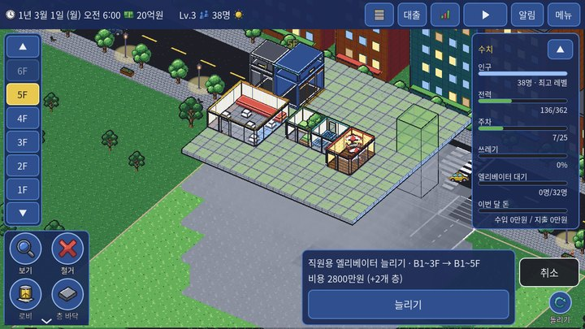
다른 층에서 같은 자리를 눌러 엘리베이터 늘리기 거리 기준 편의성·입주에 쓰는 거리는 건물 현관이 아니라 그 층의 엘리베이터 문 앞(엘리베이터가 없는 층은 계단 출구)에서 걷는 칸 수로 잽니다. 방을 엘리베이터 가까이에 두면 유리합니다.
이동 설비 비교 종류 크기 설치비 늘린 층당 최대 층 한 층 틱 정원 서는 층 타는 사람 스트레스 해금 하루 유지비 계단 2×2 69 690만원 46 460만원 6 24 — 모든 층 모두 8 Lv.1 없음 엘리베이터 2×2 2,070 2억 700만원 170 1700만원 25 10 8 모든 층 모두 대기 1틱 +1 Lv.1 30 300만원 양문형 엘리베이터 2×2 2,691 2억 6910만원 221 2210만원 25 10 8 모든 층 모두 대기 1틱 +1 Lv.2 30 300만원 에스컬레이터 2×3 340 3400만원 — 2 12 — 모든 층 모두 2 Lv.1 15 150만원 직원용 엘리베이터 2×2 1,380 1억 3800만원 140 1400만원 25 10 8 모든 층 직원만 대기 1틱 +1 Lv.2 30 300만원 급행 엘리베이터 2×3 4,020 4억 200만원 290 2900만원 60 4 16 양 끝 층만 모두 대기 1틱 +1 Lv.3 60 600만원
설치비 = 기본값 + (층 수 − 2) × 늘린 층당 → 일반 엘리베이터 25개 층 = 5억 9800만원, 급행 60개 층 = 20억 8400만원
문 앞 칸이 빈 바닥(통로)이 아닌 층에는 서지 않습니다. 모든 층이 막히면 놓을 수 없고, 일부만 막히면 「서지 못하는 층」 경고가 나옵니다. 직원(가게·식당 직원, 배달 기사, 청소·운반 직원)은 길을 고를 때 직원용 엘리베이터 비용을 ×0.4로 봅니다 → 직원용이 있으면 손님 엘리베이터가 덜 붐빕니다. 노후도가 85%를 넘으면 엘리베이터가 하루 8% 확률로 고장 나 300틱(약 2.7시간) 멈춥니다. 정전 때도 모든 엘리베이터가 멈춥니다. 엘리베이터는 카 한 대마다 전기 사용 3입니다. 자료 근거 data/guide.json chapters.transportdata/grid3d_rules.json transports·peoplescripts/grid3d/grid_world.gd:check_transport·transport_stops·_ride_costscripts/grid3d/grid_transport.gd:updatescripts/grid3d/grid_distance.gd:_build주차장 진입로 진입로(3×3)는 엘리베이터처럼 1층에서 지하로 내려가는 세로 통로입니다. 도로가 있는 북쪽 건물 가장자리에만 놓을 수 있고, 최대 6개 층(1층 + 지하)까지입니다(6900만원, 늘린 층당 2300만원). 정보창의 [아래로 늘리기]로 더 깊은 지하까지 이어집니다.
차로·주차 칸 차로 도구로 지하에 차로를 깝니다(칸당 230만원). 진입로 나가는 곳(청록 화살표)에서 주차 칸·분리수거장 옆까지 이어 주세요. 사람도 차로 어느 칸이나 걸어서 건널 수 있어(횡단 표시가 필요 없음), 차로가 사람 길을 끊지 않습니다. 차는 앞 칸에 사람이 있으면 멈췄다가 지나갑니다. 주차 칸(1×2, 2레벨)은 차로와 붙어 있고 그 차로가 진입로 출구까지 이어져야 쓰입니다. 길가 주차 20칸이 기본으로 있고, 모자라면 입주와 만족도가 떨어집니다.
주차 칸은 끌어서 여러 칸을 한 번에 깔 수 있습니다. 차로를 따라 누른 채 끌면 지나간 줄에 주차 칸이 줄지어 미리 보이고(놓을 칸은 초록, 못 놓는 칸은 빨강으로 건너뜀), 끄는 동안 칸 수와 합계가 나옵니다. 손을 떼면 설치 상자가 뜨고, [설치]를 누르면 한 번에 깔립니다. 칸은 옆 차로 쪽으로 저절로 붙고, 끈 뒤 돌리기(R)를 누르면 직각 주차와 평행 주차가 바뀝니다. 돈이 모자라면 아무것도 깔리지 않습니다.
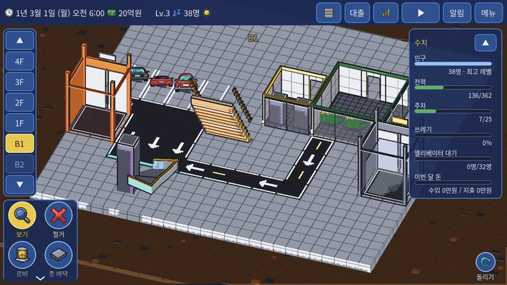
지하: 진입로 → 차로 → 주차 칸·분리수거장 차가 몇 대 필요한가 이용자 방 하나당 차 1·2인 가구 0.6대 아이 있는 가족 1대 노인 가구 0.5대 출장 손님 0.3대 관광 손님 0.4대 사무실 직원 사람 수 평균 × 0.3대
필요한 칸 = 운영 중인 방의 차 대수 합(올림) · 쓸 수 있는 칸 = 길가 주차 20 + 진입로까지 차로로 이어진 주차 칸
모자란 비율만큼: 차가 있는 입주자의 평가 스트레스 + 모자란 비율 × 12, 빈 방 입주 확률 × (1 − 모자란 비율 × 0.5). 주차 칸을 지을 수 없는 레벨(Lv.2 미만)에서는 주차 영향이 없습니다. 남는 칸(길가 주차를 뺀 진짜 주차 칸에서 남는 만큼)은 먼저 차 손님 몫입니다: 장사하는 곳마다 4칸까지. 채운 비율 × 업종·시설별 차 손님 비율만큼 하루 장사 손님이 늘고, 업종 가게는 월세 × (1 + 비율 × 채운 비율 × 0.5). 그래도 남는 칸 × 0.6대가 바깥 차로 들어와 하루 1.5씩 주차비 가 쌓이고, 정산 때 받습니다. 끌어서 여러 칸 (2026-10-18): 주차 칸 도구로 차로를 따라 끌면 줄지어 한 번에 깝니다. 비용 = 칸당 50 500만원 × 놓을 수 있는 칸 수. 못 놓는 칸(차로 위·바닥 없음·다른 시설·차로와 안 닿음·통로를 막음)은 빨갛게 건너뛰고, 합계가 가진 돈보다 많으면 아무것도 깔리지 않습니다(층 바닥 깔기와 같음). 칸은 옆 차로 쪽으로 저절로 붙고, 끈 뒤 돌리기로 직각 ↔ 평행 주차.flowchart LR
R["도로(북쪽)"] --> P["주차장 진입로 · 1층→지하"]
P --> X["그 층 진입로 출구"]
X --> L["차로"]
L --> S["주차 칸"]
L --> C["분리수거장 옆"]
M["사람"] -. "차로 어디서나 건넘 · 차는 사람 앞에서 멈춤" .-> L
자료 근거 data/guide.json chapters.parkingdata/grid3d_rules.json parking·rooms.parking_space·transports.parking_rampscripts/grid3d/parking.gd:state·rating_add·move_in_mult·customer_mult·rent_mult·outside_carsscripts/grid3d/grid_world.gd:parking_status·_ramp_edge_reason·check_lane·crosswalk_fixflowchart TD
A["방마다 더러움(쓰레기) 0~100 · 매일 자정 조금 뒤 쌓임"] -->|"오전 8:43 청소 직원"| B["하우스키핑 센터 창고 · 최대 600"]
B -->|"오후 7:38부터 카트 · 직원용 엘리베이터(없으면 일반)"| C["지하 분리수거장 · 최대 1,600"]
C -->|"매일 오후 12:21 수거 트럭 · 진입로 → 차로"| D["트럭이 최대 2,000 가져감"]
C -.->|"트럭이 못 오면"| E["건물 밖 수거 150/일 · 건물 평가 조금씩 ↓"]
B -.->|"분리수거장까지 길이 없으면"| F["건물 밖 수거 80/일"]
청소와 쓰레기 흐름 1. 하우스키핑 센터(6900만원): 오전 8:43쯤 직원이 나와 위아래 범위 안 방(이지 3·노멀 2·하드 1층)의 쓰레기를 모아 센터 창고(600)에 둡니다.
2. 오후 7:38부터 카트가 직원용 엘리베이터(없으면 일반 엘리베이터 — 그 엘리베이터 이용자가 불편해합니다)로 지하 분리수거장(3×3, 용량 1,600)에 옮깁니다.
3. 1일마다 오후 12:21에 트럭이 진입로로 내려와 분리수거장마다 최대 2,000을 가져갑니다.
트럭이 오는 4가지 조건 ① 분리수거장 입구 앞이 비어 있음
② 진입로가 그 층까지 내려와 있고, 진입로 출구 앞이 차로임
③ 분리수거장 옆에 차로가 있음
④ 그 차로가 진입로 출구까지 이어져 있음
하나라도 빠지면 분리수거장 정보창에 이유가 나옵니다.
건물 밖 수거가 시작되면 알림이 뜨고, 원인에 따라 [주차장 진입로 짓기](진입로가 없음)나 [차로 깔기](차로 문제) 버튼이 붙습니다. 진입로가 그 층까지 안 내려온 경우는 버튼 없이, 진입로 정보창의 [아래로 늘리기]로 늘리라고 안내합니다.
건물 밖 수거 트럭이 못 오면 같은 시각에 건물 밖 수거가 하루 150만큼만 대신 가져갑니다(돈은 들지 않음). 하지만 그날마다 건물 평가가 조금씩 깎이고(최대 15), 트럭이 다시 오면 천천히 돌아옵니다. 분리수거장이 가득 차면 그 층과 위아래 층 방이 더러워지고, 센터 창고가 가득 차면 청소가 멈춥니다.
문제 표시 건물에 문제가 생기면 왼쪽 층 판의 그 층 옆에 빨간 말풍선 「!」가 뜹니다(문제가 여럿이면 개수). 층 판 밖으로 밀려 안 보이는 층이면 ▲·▼ 화살표에 「!」가 붙습니다. 그 층을 고르면 문제 있는 방·시설이 붉은 반투명 상자로 덮이고 위에 「!」 표식이 뜹니다. 눌러 보면 정보창 맨 위 빨간 줄에 이유와 고치는 방법이 나오고, 고치면 표시가 저절로 사라집니다.
지하층에서는 진입로 출구와 이어진 차로가 초록 테두리로 보이고, 쓸 수 있는 주차 칸·수거 트럭이 오는 분리수거장·차가 나오는 진입로 출구에 초록 ✓가 붙습니다. 이어지지 않은 차로 칸은 붉게 보입니다. 진입로가 지나가기만 하는 지하층(그 층에 주차 칸·분리수거장이 없음)은 출구 앞에 차로가 없어도 문제로 띄우지 않습니다.
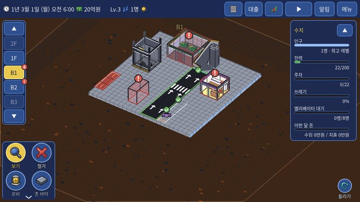
지하 1층: 층 판의 「!」, 문제 있는 시설의 붉은 상자, 이어진 차로의 초록 테두리와 ✓ 더러움이 쌓이는 양 하루 더러움 = 6 × 난이도 배율 × 쓰레기 배율 × (엘리베이터 문 앞에서 8칸 넘으면 1 + 넘은 칸 ÷ 10)
이용자 쓰레기 배율 사무실 직원 ×1 1·2인 가구 ×0.8 아이 있는 가족 ×1.4 노인 가구 ×0.8 출장 손님 ×0.8 관광 손님 ×1 상가 손님 ×1.5 업종 가게 업종표 참고 (없으면 ×1.3)
더러움이 쌓이는 방: 사무실·주택·가게·식당·카페 등 사람이 머무는 방과 호텔 객실. 빈 방은 매일 −20. 더러움이 50보다 크면 평가 스트레스 + (더러움 − 50) ÷ 50 × 30 (100이면 +30). 센터 창고가 가득 차면 그 센터의 청소가 멈춥니다. 분리수거장이 가득 차면 그 층과 위아래 1개 층 방의 더러움이 매일 +6. 카트 운반량은 하루 최대 600(카트 1대 100, 30틱마다 한 대). 계단으로만 이어지면 절반만 옮깁니다. 카트가 일반 엘리베이터를 타면 그 뒤 60틱 동안 그 엘리베이터를 타는 사람마다 스트레스 +4. 건물 밖 수거를 한 날마다 의존도 +1 → 모든 방 평가 스트레스 + 의존도 × 0.5 (최대 +15). 트럭이 가져간 날은 의존도 −3. 벌레·냄새 (하드만) 더러움 80 이상인 방에 하루 15% 확률로 생기고, 매일 벽을 맞댄 방으로 35% 확률로 번집니다. 그 방 평가 스트레스 +25. 방 정보창의 [방역]: 60 + 칸당 5. 방역하면 벌레가 없어지고 더러움이 20 이하가 됩니다. 자료 근거 data/guide.json chapters.parkingdata/grid3d_rules.json systems.hygiene·difficultyscripts/grid3d/features/hygiene.gd:daily_gain·start_cleaners·plan_carts·truck_all·outside_all·rating_adjust·_pests·truck_whyscripts/grid3d/grid_people.gd:_walk (카트 스트레스)공급 = 도시 전력망 200 + 변전실 150 × 개수 + 태양광 칸당 3 · 사용 = 시설별 사용량 합 × 날씨 배율
단계: 여유 → 주의 (사용이 공급의 90% 이상) → 부족 (공급 초과, 처음 2일은 경고만) → 위험 (정전이 날 수 있음). 위험 단계에서는 하루 두 번(오전 10:32 · 오후 9:27) 정전 확률을 굴립니다: 35% × (0.5 + 넘친 비율 × 2), 최대 95%. 날씨 없이 쓰는 양이 공급의 85% 이하면 폭염·눈 때문에는 정전이 나지 않습니다. 날씨 배율: 폭염 ×1.35, 눈 ×1.2. 정전: 240틱(약 2.2시간) 동안 모든 엘리베이터가 멈추고, 건물 안 사람마다 스트레스 +40. 전기료 = 사용량 × 하루 0.25 × 정산 날수. 빈 방도 사용량에 들어갑니다. 시설별 전기 사용 시설 사용 소형 오픈형 사무실 5 투룸(소) 3 1인 객실 1 2인 객실 2 프리미엄 객실 3 식당 10 가게 5 건강관리실 8 방재센터 3 하우스키핑 센터 2 관리사무소 2 옥상 카페 6 쇼핑몰 15 스카이 라운지 8 로비 10칸마다 1 엘리베이터 카 1대 3 에스컬레이터 3 카페 8 파티룸 6 시네마 라운지 10 택배 보관함 1 원룸(일자형) 2 분리형 원룸 2 1.5룸 2 투룸(대) 4 쓰리룸(소) 5 쓰리룸(대) 6 포룸(소) 8 포룸(대) 9 파티션형 사무실 10 임원실 + 직원석 13 회의실 포함형 17 대형 오픈형 30
표에 없는 시설(계단·진입로·장식·주차 칸·분리수거장·변전실·태양광 등)은 전기를 쓰지 않습니다.
자료 근거 data/grid3d_rules.json systems.power·systems.weather.power_multscripts/grid3d/features/power.gd:base_demand·capacity·update_level·on_tick·month_costs모든 방·이동 설비의 노후도(0~100)가 매일 오릅니다: 기본 +0.8, 엘리베이터·식당 +1.2. 60% 이상: 월세 −15%. 70% 이상: 평가 스트레스 +25. 85% 이상: 하루 8% 확률로 고장(방은 누수 = 스트레스 +25 더, 엘리베이터는 300틱 멈춤). 관리사무소: 위아래 15개 층 안에서 노후도 50% 이상·고장인 곳을 가장 낡은 순으로 하루 6곳까지 고칩니다(1곳 노후도 −35, 수리비 20). 리모델링(방 정보창): 칸 수 × 30 × (지금 단계 + 1). 노후도 0, 월세 +10%씩, 최대 3단계. 리모델링 횟수는 미션에 들어갑니다. 자료 근거 data/grid3d_rules.json systems.agingscripts/grid3d/features/aging.gd:on_day·_repair·rent_mult·rating_adjust·_renovate_cost거리 상권 가게 하나의 거리 손님 = 하루 유동 인구 × 로비 배율 × 0.02 × 층 배율 ÷ √(장사하는 곳 수)
하루 유동 인구는 오전 7시~오후 11시 시각별 값의 합입니다(맑은 날 기본 1,875). 로비 배율 = 1 + 로비 칸 수 ÷ 40 × 0.25 (0.5~2배). 로비 40칸이면 ×1.25. 층 배율 = 0.8^(|층| − 1). 1층·지하 1층은 1, 2층 ×0.8, 5층 ×0.41. 쇼핑몰·스카이 라운지는 층 감소가 없고, 쇼핑몰 위아래 3개 층의 가게는 ×1.5. 거리 상권이 켜져 있으면 예전의 고정 「건물 밖 손님」 대신 거리 손님이 옵니다. 그 밖에 건물 안 사람(점심·외출·호텔 손님 저녁)이 들르면 손님 1명씩 더해집니다. 계절·날씨 계절 날씨 확률 (매일 자정) 봄 맑음 55%, 흐림 25%, 비 20% 여름 맑음 40%, 흐림 15%, 비 30%, 폭염 15% 가을 맑음 60%, 흐림 25%, 비 15% 겨울 맑음 45%, 흐림 30%, 눈 25%
날씨 주민 외출 거리 손님 배달 전기 사용 흐림 ×1 ×0.9 ×1 ×1 비 ×0.5 ×0.55 ×1.6 ×1 눈 ×0.4 ×0.5 ×1.8 ×1.2 폭염 ×0.7 ×0.7 ×1.4 ×1.35
봄 맑은 날은 거리 손님 ×1.3(벚꽃). 한 해 마지막 날(12월 마지막 날)은 연말 장터: 장사하는 곳 하루 수입 ×1.5. 계절: 3~5월 봄, 6~8월 여름, 9~11월 가을, 12~2월 겨울. 자료 근거 data/grid3d_rules.json systems.street·systems.weather·time.season_of_monthscripts/grid3d/features/street.gd:distribute·room_factor·lobby_factorscripts/grid3d/features/weather.gd:on_day·street_mult·income_mult철거 도구 철거 도구를 고르면 경고가 한 번 나옵니다. [확인] 뒤로는 누르는 것이 확인 없이 바로 철거됩니다. 한 칸을 누르면 시설 → 차로 → 바닥 순서로 지웁니다(예전 저장의 횡단 표시가 남아 있으면 차로보다 먼저). 다른 층을 받치는 바닥, 로비를 둘로 끊는 칸은 철거할 수 없습니다.
범위 철거 끌어서 범위를 정하면 확인 상자가 한 번 뜹니다. 범위 안에 시설·차로가 있으면 그것만 지우고 바닥은 남깁니다. 남은 바닥을 지우려면 한 번 더 끌어 주세요.
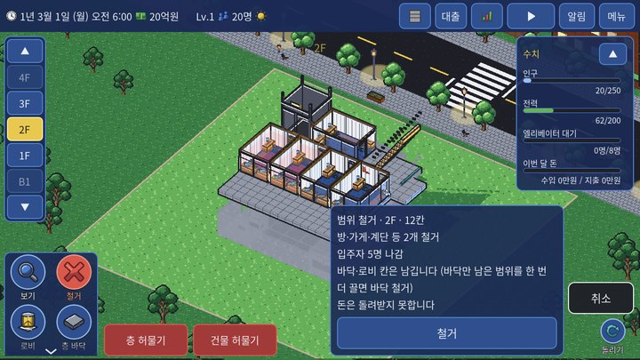
끌어서 정한 범위 철거 확인 상자 층 허물기·건물 허물기 철거 모드 아래의 [층 허물기]는 그 층의 방을 모두 지웁니다(한 번 확인). 그 층의 계단도 같이 철거됩니다(여러 층 계단은 그 층 부분만 끊어 위·아래로 나뉨). 엘리베이터는 철거 도구로 자를 층에서 누르면 그 층과 위가 철거되고, 맨 아래층에서 누르면 통째로 철거됩니다. 주차장 진입로는 누른 지하층부터 아래가 철거되고, 1층에서 누르면 통째로 철거됩니다. 끌어서 하는 범위 철거에서는 엘리베이터가 범위 안에 있어도 남깁니다. [건물 허물기]는 두 번 확인한 뒤 모든 층을 지우고 빈 땅으로 만듭니다. 돈·레벨·해금·미션·날짜는 그대로입니다. 허물기 직전 상태는 「허물기 전 백업」으로 저장되어, 메뉴 > 불러오기 맨 아래에서 되돌릴 수 있습니다.
돌려받는 돈: 이지에서만 바닥·로비 칸의 지은 값을 돌려받고, 방·시설은 어느 난이도에서도 돌려받지 못합니다.
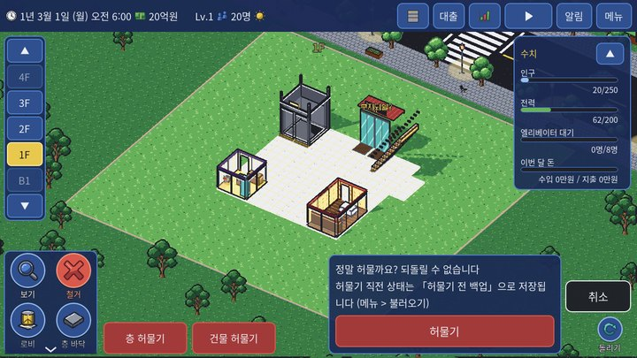
건물 허물기 두 번째 확인과 백업 안내 자료 근거 data/guide.json chapters.demolishscripts/grid3d/grid_world.gd:check_demolishscripts/grid3d/demolish_tools.gdscripts/grid3d/grid_game.gd:demolish_refund수입 공식 수입 공식 받는 때 월세 (사무실·원룸·가게) 하루 월세[등급] × 날수 × 업종 배율 × 차 손님 보너스(업종 가게) × 성향 배율 × 노후·리모델링 × 오피스 층 ×1.08 × 난이도 수입 배율 정산 때 분양 (투룸~포룸) 분양가[등급] × 난이도 수입 배율 — 그 방에 처음 입주할 때 한 번만 첫 입주 숙박비 (호텔 객실) 1박[등급] × 난이도 수입 배율 체크아웃 하루 장사 (카페·식당·시네마·파티룸·쇼핑몰·라운지·옥상 카페) 손님 = (건물 안 손님 + 거리 손님) × 먹자골목 ×1.25 × 차 손님 배율 → 수입 = 손님 × 객단가 − 운영비. 이익이면 × 연말 장터 × (1 + 지출 효과%) × 난이도 수입 배율. 손해는 그대로 냄 오전 4:00 주차비 하루 바깥 차 대수 × 1.5 누계 × 난이도 수입 배율 정산 때
지출 지출 공식 설치비 지을 때 바로 시설 유지비 하루 유지비 × 날수 (방·이동 설비, 운영 여부와 관계없이 지어져 있으면) 로비 유지비 로비 칸 수 × 0.05 × 날수 전기료 전기 사용량 × 0.25 × 날수 수리비 관리사무소가 고칠 때마다 20 대출 이자 매달 1일 잔액 × 월 이자율 (이지 1% · 노멀 2% · 하드 3%), 돈이 모자라도 빠져나가 마이너스가 됨 방역·리모델링 버튼을 누를 때
계산 예시 소형 오픈형 사무실(설치비 4800만원), 보통 등급 하루 33 → 30일 990, 노멀 ×1.1 = 1억 890만원. 하루 수입으로 설치비를 14일이면 되찾습니다. 카페: 손님 1명 1.6, 운영비 16 → 하루 손님 10명 미만이면 손해입니다. 분리수거장 유지비는 하루 150(한 달 30일이면 4억 5000만원)로 시설 중 큰 편입니다. 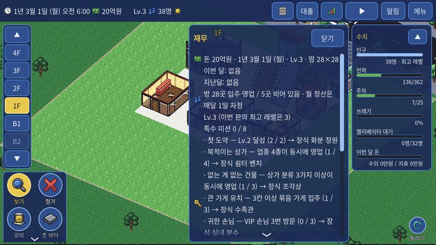
재무 창 대출 위 줄의 대출 버튼에서 1억원 단위로 빌리고 갚습니다. 합계 최대 20억원, 갚기는 언제든 수수료 없이 일부·전부 가능합니다.
자료 근거 scripts/grid3d/grid_economy.gd:settle_month·settle_commercial_day·move_in·hotel_checkout·charge_interest·borrow·repayscripts/grid3d/features/features.gd:rent_mult·customer_mult·income_multscripts/grid3d/features/aging.gd:rent_multscripts/grid3d/features/traits.gd:rent_multscripts/grid3d/features/themes.gdscripts/grid3d/features/power.gd:month_costsscripts/grid3d/parking.gd입주 확률(확인 한 번) = 등급 확률 × 거리 배율 × 난이도 입주 배율 × (1 + 입주 효과%) × 주차 배율 (최대 100%)
거리 배율 = 8칸까지 1, 그 뒤 1 ÷ (1 + (거리 − 8) ÷ 12)
거리는 방 출입문 앞에서 같은 층의 엘리베이터 문 앞(엘리베이터가 서지 않는 층은 계단·에스컬레이터 출구)까지 복도로 걷는 칸 수입니다. 직선 거리가 아닙니다. 예상 입주 일수 = 1 ÷ (확률 × 하루 확인 횟수 2). 보통 등급, 가까운 방(노멀) = 0.71일, 20칸 떨어진 방 = 거리 배율 0.5 → 1.43일. 사무실·주택은 입주자 성향 후보 3팀이 먼저 생깁니다. 정보창에서 고르면 그 자리에서 입주하고, 반나절(1,200틱) 동안 안 고르면 그 뒤 확인 시각부터 자동으로 들어옵니다. 로비에서 그 방까지 길이 없으면(복도와 안 붙음 · 로비에서 갈 길 끊김) 입주하지 않고, 이미 살던 사람은 나갑니다. 호텔 체크인 확률 = 등급 확률 + 호텔 층 +0.1, × 난이도 입주 배율 × (1 + 입주 효과%) × 주차 배율. 자료 근거 scripts/grid3d/grid_economy.gd:distance_factor·move_in_chance·expected_move_in_days·check_tenants·assign_hotel_guestsscripts/grid3d/grid_distance.gdscripts/grid3d/features/traits.gd:allow_auto_move_in사람은 이동할 때마다 스트레스를 쌓습니다. 자정에 방마다 그 방 사람들의 「이동 한 번당 평균 스트레스」 를 내고, 아래 보정을 더해 그날 값을 정합니다. 평가 = 어제 평가 × 0.5 + 오늘 값 × 0.5 (첫날은 오늘 값).
이동 중 스트레스 원인 스트레스 엘리베이터 기다림 1틱마다 +1 걷기 1칸마다 +0.3 (장식 반경 안이면 × 그 장식 배율, 가장 강한 것 하나) 계단 1개 층마다 +8 에스컬레이터 1개 층마다 +2 길이 없음 +120 (그대로 도착한 것으로 처리) 카트가 다녀간 일반 엘리베이터 +4 정전 건물 안 사람마다 +40 계단이 낀 이동 그 이동에 더해지는 모든 스트레스 ×1.5 장식 지나가기 장식마다 한 이동에 한 번 −(장식 감소값, 그 이동에서 쌓인 만큼까지)
하루 평가 계산 오늘 값 = max(0, 평균 스트레스 × 난이도 배율 − 만족 효과) + 주차 부족 + 위생 + 노후 + 이웃 궁합 + 층 테마 + 택배 보관함 + 옥상 정원 (0 아래로는 안 내려감)
보정 값 난이도 스트레스 배율 이지 ×0.65 · 노멀 ×1 · 하드 ×1.15 주변 시설 만족 효과 최대 −20 주차 부족 (차 있는 입주자) + 모자란 비율 × 12 더러움 50 넘음 최대 +30 벌레·냄새 (하드) +25 건물 밖 수거 의존 최대 +15 (모든 방) 노후도 70% 이상 / 고장 +25 / +25 조용한 성향 옆 시끄러운 이웃 +30 (이웃마다) 조용한 성향끼리 이웃 −15 (이웃마다) 주택이 같은 층 가게와 맞닿음 (성향 있는 집) +15 주거 층 테마 (주택) −10 오늘 택배를 보관함으로 받음 −10 위쪽 3개 층 안에 옥상 정원 (사무실·주택) −12
평가 단계와 퇴거 단계 평가값 좋음 70 미만 보통 70 ~ 140 미만 나쁨 140 이상
나쁨이 3일 이어지면 그 방은 빈 방이 됩니다(불만 퇴거). 직접 운영하는 곳(카페·식당 등 하루 장사 시설)은 퇴거하지 않습니다. 이웃 궁합: 맞닿은 이웃은 같은 층에서 변을 맞댄 방과 바로 위·아래층에서 칸이 겹치는 방입니다.
자료 근거 scripts/grid3d/grid_people.gd:_add_stress·_walk·_decor_walk·stepscripts/grid3d/grid_economy.gd:evaluate_begin·evaluate_step·rating_levelscripts/grid3d/features/*.gd:rating_adjustdata/grid3d_rules.json people·stars효과 = Σ(값 × 가까움 × 겹침) × 크기[종류] · 가까움 = 1 ÷ (1 + 걷는 거리 ÷ 14)
걷는 거리: 같은 층은 두 문 앞 칸 사이의 가로+세로 칸 수, 다른 층은 (내 방 → 엘리베이터 문 앞) + (상대 → 엘리베이터 문 앞) + 층 차이 × 6칸. 층 차이가 4를 넘으면 닿지 않습니다. 장식은 같은 층만(가까움 기준 8칸). 같은 시설이 여럿이면 가까운 순으로 ×1, ×0.35, ×0.12… (겹침 감소). 크기: 만족 ×8 · 입주 ×10 · 머묾 ×10 · 지출 ×10. 최대: 만족 20 · 입주 30 · 머묾 30 · 지출 30. 종류: 만족 = 평가 스트레스를 그만큼 줄임 / 입주 = 입주·체크인 확률 +% / 머묾 = 손님이 머무는 시간 +% (수입 공식에는 직접 들어가지 않음) / 지출 = 하루 장사 수입 +%. 효과를 주는 쪽은 운영 중인 시설만입니다(업종 가게는 업종이 정해진 대표 칸). 예시 1·2인 가구 집과 같은 층 편의점이 10칸 떨어짐: 가까움 0.58 → 만족 4.67. 같은 편의점이 하나 더 20칸에 있으면: (0.58 + 0.41 × 0.35) × 8 = 5.82. 두 층 아래, 양쪽 다 엘리베이터에서 5칸: 걷는 거리 5 + 5 + 2 × 6 = 22 → 가까움 0.39. 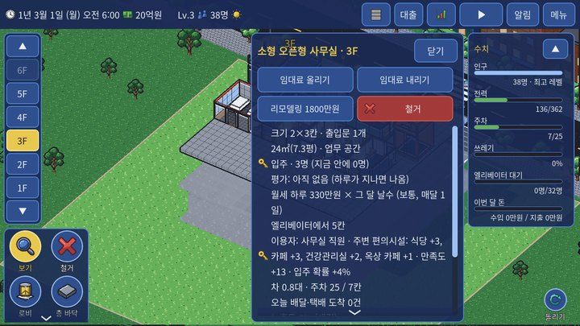
방 정보창: 이용자 분류와 주변 편의시설 효과 이용자 분류 분류 어떤 방 사무실 직원 사무실 방에서 일하는 사람 1·2인 가구 주택 중 아래 두 분류가 아닌 집 (원룸·1.5룸, 아이 없는 투룸 이상) 아이 있는 가족 투룸 이상 분양 주택에 3명 이상 사는 집 (3번째 사람부터 아이) 노인 가구 아이 없는 주택 중 입주자 성향이 「아침형」인 집 출장 손님 호텔 1인 객실 손님 관광 손님 호텔 2인·프리미엄 객실 손님 상가 손님 건물 밖에서 오는 손님 — 업종 가게·카페·식당·시네마 등 장사하는 곳에서 효과를 잼 VIP VIP 손님 — 들를 곳 고르기(머묾·지출 효과가 큰 곳일수록 잘 감)와 머무는 시간
자료 근거 data/grid3d_rules.json amenity_effectsscripts/grid3d/amenity.gd:user_class·sources·detail·bonus칸의 숫자는 「값」입니다. 실제 효과 = 값 × 가까움 × 크기(만족 ×8, 입주·머묾·지출 ×10).
시설 사무실 직원 1·2인 가구 아이 있는 가족 노인 가구 출장 손님 관광 손님 상가 손님 VIP 편의점 만족 1 만족 1 입주 0.3 만족 1 만족 1 만족 1 만족 1 · · 베이커리 카페 만족 1 만족 0.5 만족 0.5 만족 0.5 만족 1 만족 1 머묾 0.2 · 김밥·분식 만족 1 입주 0.3 만족 0.2 만족 0.2 만족 0.2 만족 0.5 만족 0.5 · · 플라워숍 만족 0.2 만족 0.2 만족 0.2 만족 0.5 · 만족 0.2 머묾 0.2 · 헤어살롱 만족 0.2 만족 0.5 만족 0.5 만족 0.5 만족 0.2 만족 0.2 · · 드럭스토어 만족 0.5 만족 1 만족 1 만족 1 입주 0.5 만족 0.5 만족 0.5 · · 문구·생활잡화 만족 0.2 만족 0.2 만족 0.5 · · · · · 의류 편집숍 만족 0.2 만족 0.5 만족 0.2 · · 만족 0.5 머묾 0.3 지출 0.3 · 동네 마트 만족 0.5 만족 1 만족 1 입주 0.5 만족 1 입주 0.5 만족 0.2 만족 0.2 · · 헬스장 만족 0.5 입주 0.3 만족 1 입주 0.3 만족 0.3 만족 0.2 만족 0.5 만족 0.2 · · 필라테스 스튜디오 만족 0.2 만족 0.5 만족 0.5 만족 0.2 · · · · 피부과 만족 0.2 만족 0.5 만족 0.3 만족 0.3 · 만족 0.3 · · 치과 만족 0.5 만족 0.5 만족 1 만족 1 · · · · 가정의원 만족 0.5 만족 0.5 만족 1 입주 0.5 만족 1 입주 1 만족 0.5 만족 0.5 · · 한방·재활 센터 만족 0.3 만족 0.2 만족 0.2 만족 1 입주 0.5 · · · · 키즈카페 · · 만족 1 입주 1 만족 0.2 · 만족 0.3 · · 카페 만족 1 만족 0.5 만족 0.3 만족 0.3 만족 0.5 만족 0.5 머묾 0.2 지출 0.2 · 식당 만족 1 만족 0.5 만족 0.5 만족 0.5 만족 1 만족 1 지출 0.2 · 시네마 라운지 만족 0.2 만족 0.5 만족 0.5 · · 만족 0.5 머묾 0.3 지출 0.3 머묾 0.3 파티룸 만족 0.3 만족 0.3 만족 0.3 · · 만족 0.2 · · 쇼핑몰 만족 0.5 만족 0.5 입주 0.3 만족 1 입주 0.3 만족 0.3 · 만족 1 머묾 0.3 지출 0.5 지출 0.3 스카이 라운지 만족 0.5 만족 0.3 · · 만족 0.5 만족 1 머묾 0.3 머묾 0.5 지출 0.5 옥상 카페 만족 0.5 만족 0.5 만족 0.3 · · 만족 0.5 머묾 0.2 · 환승 통로 만족 0.5 입주 0.5 입주 0.3 · · 만족 0.5 만족 0.5 지출 0.5 · 관리사무소 입주 0.2 만족 0.3 입주 0.3 만족 0.3 입주 0.3 만족 0.5 입주 0.3 · · · · 건강관리실 만족 0.5 만족 0.3 만족 0.5 만족 1 입주 0.5 만족 0.2 만족 0.2 · · 방재센터 입주 0.3 입주 0.2 입주 0.3 입주 0.3 · 입주 0.2 · · 택배 보관함 만족 0.3 만족 1 만족 0.5 만족 0.5 · · · · 전망대 · · 만족 0.3 · · 만족 1 입주 0.5 머묾 0.3 머묾 0.5 옥상 정원 만족 0.3 만족 0.5 만족 0.5 만족 1 · 만족 0.3 · 머묾 0.2 화분 정원 만족 0.2 만족 0.2 · 만족 0.3 · · 머묾 0.1 · 쉼터 벤치 · · 만족 0.3 만족 0.5 · · 머묾 0.2 · 조각상 · · · · · 만족 0.3 머묾 0.2 머묾 0.2 실내 분수 · · 만족 0.5 · · 만족 0.5 머묾 0.3 지출 0.2 머묾 0.3 수족관 · · 만족 1 · · 만족 0.5 머묾 0.3 머묾 0.3 그랜드 피아노 만족 0.3 만족 0.3 · · · 만족 0.5 머묾 0.3 지출 0.2 머묾 0.5 지출 0.3 미디어 아트 기둥 · 만족 0.3 · · · 만족 0.5 머묾 0.3 지출 0.2 머묾 0.3 옥상 정자 만족 0.3 · 만족 0.3 만족 0.5 · 만족 0.5 · 머묾 0.3
편의 효과가 없는 시설 항목 이유 가게 업종이 정해지기 전 빈 가게 칸 — 업종이 정해지면 그 업종의 효과(가게 업종 표)를 냅니다 주차 칸 효과는 주차 계산으로 — 차 있는 입주자의 필요 칸·차 손님·주차비 주차장 진입로 주차 칸·차로를 바깥 도로와 잇는 통로 — 효과는 주차 계산과 쓰레기 수거 트럭으로 차로 지하 차가 다니는 길 — 효과는 주차 칸·분리수거장 연결(주차 계산·수거 트럭)으로 횡단 표시 차로 위에서 사람이 건너는 칸 — 편의 효과 없음 (걷는 길이 짧아지는 것은 동선 계산에 이미 들어감) 계단·엘리베이터·에스컬레이터 이동 수단(계단·엘리베이터·에스컬레이터) — 걷는 거리·기다림은 동선·스트레스 계산에 이미 들어감 하우스키핑 센터 효과는 쓰레기 흐름(위생)으로 — 범위 안 방 청소·센터 창고·카트 운반 분리수거장 효과는 쓰레기 흐름(위생)으로 — 쓰레기 보관·수거 트럭 변전실 변전실 — 전력 공급을 늘리는 시설(편의 효과 없음) 태양광 패널 태양광 패널 — 전력 공급을 늘리는 시설(편의 효과 없음)
자료 근거 data/grid3d_rules.json amenity_effects.items·classes항목 이지 노멀 하드 입주·체크인 확률 배율 ×1.3 ×1 ×0.85 스트레스(평가) 배율 ×0.65 ×1 ×1.15 수입 배율 ×1.25 ×1.1 ×1 더러움 쌓이는 양 ×0.5 ×1 ×1.3 청소 범위 (위아래 층) 3 2 1 Lv.3 지원 시설 종류 1 2 3 대출 월 이자 1% 2% 3% 벌레·냄새 없음 없음 있음 철거 때 바닥·로비 값 돌려받음 있음 없음 없음
난이도는 새 게임을 시작할 때 고르고, 게임 도중에는 바꿀 수 없습니다. 기본은 노멀입니다. 수입 배율은 하드가 기준(×1.0)입니다.
자료 근거 data/grid3d_rules.json difficultyscripts/grid3d/difficulty.gdscripts/grid3d/grid_game.gd:diff레벨 조건 땅 새로 풀리는 시설 Lv.1 시작 20×20 소형 오픈형 사무실, 파티션형 사무실, 원룸(일자형), 분리형 원룸, 투룸(소), 가게, 카페, 분리수거장, 하우스키핑 센터, 택배 보관함, 관리사무소, 옥상 정원, 태양광 패널, 변전실, 계단, 엘리베이터, 주차장 진입로, 에스컬레이터 Lv.2 인구 250명 24×24 임원실 + 직원석, 회의실 포함형, 1.5룸, 투룸(대), 쓰리룸(소), 1인 객실, 2인 객실, 식당, 파티룸, 주차 칸, 건강관리실, 방재센터, 옥상 카페, 쇼핑몰, 양문형 엘리베이터, 직원용 엘리베이터 Lv.3 인구 900명 + 지원 시설 1·2·3종류 (이지·노멀·하드) 28×28 대형 오픈형, 쓰리룸(대), 포룸(소), 프리미엄 객실, 시네마 라운지, 스카이 라운지, 급행 엘리베이터
조건을 채우면 자정에 저절로 오릅니다. 인구는 사무실 직원·주민·가게 직원·호텔 손님을 셉니다(배달 기사·VIP·청소·운반 직원은 빼고). 지원 시설(방재센터, 건강관리실, 하우스키핑 센터, 분리수거장, 관리사무소, 택배 보관함)은 서로 다른 종류 가 운영 중이어야 합니다. 땅은 도로가 있는 북쪽은 그대로, 남쪽으로 4칸, 동서로 2칸씩 넓어집니다. 지은 건물은 제자리입니다. 잠긴 시설은 짓기 목록에 자물쇠로 보이고, 누르면 풀리는 조건이 나옵니다. 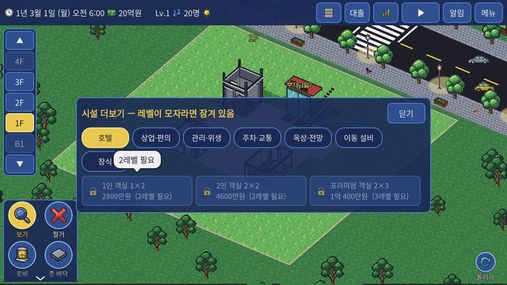
잠긴 시설을 누르면 풀리는 조건이 나옵니다 주의 지금 판의 최고 레벨은 Lv.3입니다. Lv.4 이상이 필요한 포룸(대), 환승 통로, 전망대(3가지)는 아직 지을 수 없습니다.자료 근거 data/grid3d_rules.json stars·land_*scripts/grid3d/grid_game.gd:level_conditions_met·support_running·population·raise_starscripts/grid3d/grid_world.gd:land_rect·unlock_state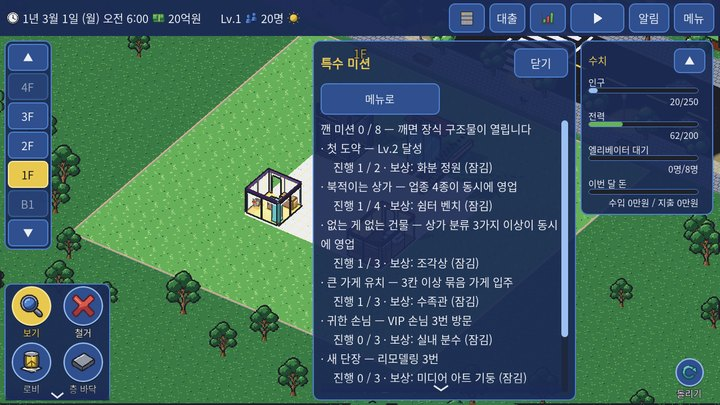
특수 미션 창 진행은 50틱(약 27분)마다, 그리고 자정·사건(VIP 방문·리모델링·호텔 체크인)마다 다시 셉니다. 보상은 장식 구조물 잠금 풀림뿐입니다. 메뉴 > 미션에서 진행도를 봅니다. VIP 손님: 하루 35% 확률로 오후 12:21~오후 7:38 사이 한 번, 영업 중인 상가·카페·식당 한 곳을 다녀갑니다. VIP의 머묾·지출 효과가 큰 곳일수록 잘 고릅니다(무게 1 + (머묾% + 지출%) ÷ 20). 자료 근거 data/grid3d_rules.json missions·vip·rooms.decor_*scripts/grid3d/missions.gd:progress·checkscripts/grid3d/grid_game.gd:_plan_vip·_spawn_vip입주자 성향 성향 나올 확률 임대료 소리 조용한 사무실 40% ×1 조용함 콜센터(시끄러움) 25% ×1.15 시끄러움 야근 많은 회사 20% ×1.05 — 디자인 스튜디오 15% ×1.1 — 조용한 가족 35% ×1 조용함 반려동물 25% ×1.05 — 음악가(시끄러움) 15% ×1.1 시끄러움 아침형 25% ×0.95 조용함
시끄러운 입주자는 임대료를 더 내지만 조용한 이웃의 평가를 나쁘게 합니다. 「아침형」 주민의 집은 「노인 가구」로 셉니다.
층 테마 테마 조건 (한 층에) 효과 먹자골목 카페·식당·옥상 카페 4곳 이상 그 시설 손님 ×1.25 오피스 층 사무실 7곳 이상 사무실 월세 ×1.08 호텔 층 호텔 객실 12곳 이상 체크인 확률 +0.1 주거 층 주택 4곳 이상 주택 평가 스트레스 −10
빈 방도 개수에 들어갑니다.
배달·택배 음식 배달: 오후 12:18~오후 12:44 · 오후 4:30~오후 8:00 두 때에 사무실 50% · 주택 35% 확률. 택배: 오전 10:44~오후 2:00에 사무실 60% · 주택 50% 확률. 사무실은 휴일에 받지 않습니다. 기사는 1층 현관으로 와서 엘리베이터·계단으로 올라가 손님 엘리베이터를 붐비게 합니다. 직원용 엘리베이터가 있으면 그쪽을 먼저 씁니다. 택배 보관함이 있으면 택배는 보관함에서 끝나고, 받은 방은 그날 스트레스 −10. 옥상 옥상 정원·옥상 카페·태양광·옥상 정자·전망대는 위에 바닥이 없는 맨 위층에만 놓이고, 그 위로는 바닥을 깔 수 없습니다. 건물을 더 올리려면 옥상 시설을 먼저 철거해야 합니다.
자료 근거 data/grid3d_rules.json systems.traits·themes·delivery·rooftopscripts/grid3d/features/traits.gdscripts/grid3d/features/themes.gdscripts/grid3d/features/delivery.gdscripts/grid3d/features/rooftop.gd상호작용 내용 가게 업종 합치기 빈 가게 칸을 나란히 2~4칸 직사각형으로 비워 두면 편의점·드럭스토어·마트·헬스장·키즈카페 같은 큰 업종이 들어옵니다. 미션 「큰 가게 유치」(3칸 묶음)의 조건이기도 합니다. 업종 다양화 업종 종류·분류 수는 미션 「북적이는 상가」·「없는 게 없는 건물」의 조건이고, 이용자마다 원하는 업종이 달라 만족 효과가 넓게 퍼집니다. 장식 범위 장식은 같은 층만, 반경 안을 걷는 사람의 걷기 스트레스를 줄이고 한 이동에 한 번 스트레스를 덜어 줍니다. 엘리베이터 문 앞처럼 사람이 많이 지나는 길목이 효과적입니다. 청소 범위와 난이도 하우스키핑 센터는 위아래 3(이지)·2(노멀)·1(하드)층만 맡습니다. 하드에서는 3개 층마다 하나꼴로 필요하고, 센터는 1층에 놓을 수 없습니다. 직원용 엘리베이터와 쓰레기 카트는 직원용 엘리베이터를 먼저 찾습니다. 없으면 일반 엘리베이터로 옮기고 그 엘리베이터 이용자가 스트레스를 받습니다. 계단으로만 이어지면 하루 운반량이 절반입니다. 건물 밖 수거 의존 트럭이 못 오면 바깥 수거가 대신하지만 하루 의존도 +1 → 모든 방 평가 +0.5씩(최대 +15). 트럭이 다시 오면 하루 −3씩 회복합니다. 주차와 장사 주차 칸이 남으면 차 손님(마트 50%, 쇼핑몰 50% 등)이 늘고 업종 가게 월세가 오르며, 그래도 남으면 주차비를 받습니다. 모자라면 차 있는 입주자의 평가·입주가 나빠집니다. 거리 → 높은 층 상가 높은 층 가게는 거리 손님이 줄어듭니다(층마다 ×0.8). 쇼핑몰을 가까이 두면 위아래 3개 층 가게가 ×1.5를 받습니다. 날씨 연쇄 비·눈 → 외출↓·거리 손님↓·배달↑(엘리베이터 붐빔) / 폭염·눈 → 전기 사용↑ → 전력 여유가 적으면 정전 → 엘리베이터 멈춤·스트레스. 이웃 배치 조용한 성향 옆에 콜센터·음악가를 두면 +30, 주택을 같은 층 가게와 붙이면 +15. 조용한 성향끼리 붙이면 −15. 엘리베이터 거리 입주 확률, 더러움 쌓이는 속도, 편의 효과의 다른 층 거리가 모두 「엘리베이터 문 앞까지 칸 수」를 씁니다. 엘리베이터 가까이 방을 두면 세 가지가 함께 좋아집니다. 옥상과 증축 옥상 시설 위에는 바닥을 못 깝니다. 태양광은 전력을, 옥상 정원은 아래 3개 층 평가를 돕지만 건물을 더 올리려면 철거해야 합니다.
자료 근거 수거 트럭이 안 와요 분리수거장 정보창의 「수거 트럭」 줄이 이유를 알려 줍니다. 아래 순서로 확인하세요.
① 분리수거장 입구 앞 칸이 비어 있나 (막혔으면 입구 방향을 돌려 다시 놓기)
② 주차장 진입로가 분리수거장이 있는 층까지 내려와 있나 (진입로 정보창 [아래로 늘리기], 최대 6개 층)
③ 분리수거장 바로 옆 칸에 차로가 있나
④ 그 차로가 진입로 출구(청록 화살표)까지 끊김 없이 이어지나
트럭은 매일 오후 12:21에 옵니다. 지나간 뒤에 고쳤다면 다음 날 옵니다.
차가 안 들어와요 / 주차 칸이 「쓸 수 없음」 주차 칸 정보창의 상태: 「옆에 차로가 없음」 → 주차 칸 둘레에 차로를 깔기 / 「이 층에 진입로 출구가 없음」 → 진입로를 그 층까지 늘리기 / 「차로가 진입로까지 안 이어짐」 → 끊긴 칸을 잇기.
진입로는 북쪽(도로 쪽) 건물 가장자리에만 놓입니다. 진입로 북쪽 바로 바깥이 로비이면 놓을 수 없습니다.
주차 칸은 Lv.2부터, 지하에만 놓을 수 있습니다.
입주가 안 돼요 방 정보창의 「예상 입주 일수」를 먼저 봅니다. −(들어올 수 없음)이면 길 문제입니다: 입구 앞이 통로인지, 로비 → 엘리베이터 → 그 층 복도로 이어지는지 확인하세요.
사무실·주택은 입주 희망 후보가 먼저 뜹니다. 정보창에서 후보를 누르면 바로 입주합니다(안 누르면 반나절 뒤부터 자동).
엘리베이터 문 앞에서 8칸보다 멀면 확률이 줄어듭니다. 임대 등급을 「알뜰」·「특가」로 내리면 빨리 찹니다.
주차 칸이 모자라면 차 있는 입주자의 입주 확률이 최대 50% 줄어듭니다.
입주 확인은 하루 두 번(오전 7:30 · 오후 2:00)뿐입니다.
호텔 손님이 안 와요 손님이 나간 객실은 「청소 필요」 상태가 되고, 하우스키핑 센터가 있어야 다시 빈 객실이 됩니다(오전 10:44 · 오후 12:44, 센터 하나당 그때마다 5곳).
체크인은 하루 한 번 오후 5:00입니다.
엘리베이터를 아무도 안 타요 엘리베이터 정보창의 「오늘 이용 ○명 (직원 · 카트)」를 봅니다.
문 앞 칸이 빈 바닥이 아닌 층에는 서지 않습니다. 정보창·미리보기의 「서지 못하는 층」 경고를 확인하세요.
급행은 양 끝 층에만 섭니다. 직원용은 손님·입주자가 타지 않습니다.
같은 층에 다른 엘리베이터·계단이 더 가까우면 그쪽을 씁니다.
청소 직원이 안 보여요 청소 직원은 매일 오전 8:43에 나와 더러움이 1 이상인 방만 찾아갑니다. 방이 깨끗하면 나오지 않습니다.
방 정보창의 「담당 하우스키핑」이 「없음」이면 범위(위아래 이지 3·노멀 2·하드 1층) 밖입니다.
센터 창고가 가득 차면 청소가 멈춥니다. 센터 정보창의 「운반」 줄에서 분리수거장까지 길을 확인하세요.
정전이 나요 오른쪽 위 수치 창·변전실 정보창에서 「사용 / 공급」을 봅니다. 사용이 공급을 넘은 지 2일이 지나면 정전이 날 수 있습니다.
지하에 변전실(+150)을 짓거나 옥상에 태양광(칸당 +3)을 올리세요.
여름 폭염(×1.35)·겨울 눈(×1.2)은 사용을 늘립니다.
입주자가 불만으로 나가요 평가가 「나쁨」(140 이상)인 날이 3일 이어지면 나갑니다. 방 정보창의 평가·이웃·더러움·노후도 줄을 확인하세요.
흔한 원인: 엘리베이터 대기(정원 8명 카 1대가 많은 층을 맡음), 계단 이동(×1.5), 먼 복도, 더러움, 시끄러운 이웃, 주차 부족.
방을 놓을 수 없어요 미리보기가 빨간색이면 이유가 나옵니다. 자주 나오는 이유: 입구 앞이 통로가 아님(R로 돌리기), 층 규칙(사무실·주택·호텔은 2층 이상), 현관 자리, 통로를 막음, 차로 위, 바닥 없음, 레벨·미션 잠금.
레벨이 안 올라요 레벨은 자정에만 확인합니다. Lv.3은 인구 외에 지원 시설이 서로 다른 종류 로 운영 중이어야 합니다(노멀 2종류).
지금 판의 최고 레벨은 Lv.3입니다.
돈이 마이너스가 됐어요 대출 이자는 돈이 모자라도 빠져나가 마이너스가 됩니다. 재무 창에서 항목별 지출을 확인하세요. 분리수거장(하루 150)·환승 통로처럼 유지비가 큰 시설이 있습니다.
곧 추가 문제가 생긴 층·방을 화면에 표시하는 기능(층 판의 ! 말풍선, 붉은 방 표시)을 만들고 있습니다. 나오면 이 절에 사용법을 더합니다.자료 근거 scripts/grid3d/features/hygiene.gd:truck_whyscripts/grid3d/grid_world.gd:parking_statusscripts/grid3d/grid_economy.gd:expected_move_in_daysscripts/grid3d/features/features.gd:info_linesscripts/grid3d/features/power.gd
틱 게임 시간의 가장 작은 단위. 하루 2,400틱, 낮 1시간 = 110틱.
레벨 (Lv.) 건물 등급. 오르면 땅이 넓어지고 시설이 풀림.
인구 사무실 직원·주민·가게 직원·호텔 손님 수.
로비 1층 바닥이자 통로.
층 바닥 2층 이상·지하의 바닥. 빈 칸은 복도(통로).
현관 로비 가장자리의 건물 출입구. 모든 사람이 여기로 드나듦.
통로·복도 아무것도 놓지 않은 바닥 칸. 사람이 걷는 곳.
입구 방의 출입문. 입구 앞 칸이 통로여야 방을 놓을 수 있음.
임대 등급 프리미엄·보통·알뜰·특가. 비쌀수록 수입↑ 입주↓.
분양 주택(투룸 이상)이 처음 입주할 때 한 번 받는 돈.
직접 운영 카페·식당처럼 길만 이어지면 바로 영업하는 시설.
업종 가게 세입자의 종류(편의점·치과 등 16가지).
묶음 가게 빈 가게 칸 여러 개를 직사각형으로 합친 큰 가게.
동선 거리 방 입구에서 그 층 엘리베이터 문 앞까지 복도로 걷는 칸 수.
스트레스 이동 중 쌓이는 피로. 기다림·걷기·계단 등.
평가 방마다 매일 내는 점수(낮을수록 좋음). 나쁨이 이어지면 퇴거.
이용자 분류 사무실 직원·1·2인 가구·아이 있는 가족·노인 가구·출장 손님·관광 손님·상가 손님·VIP.
편의 효과 가까운 시설이 이용자에게 주는 만족·입주·머묾·지출 보너스.
겹침 감소 같은 시설이 여럿이면 두 번째부터 효과가 ×0.35씩 줄어드는 것.
지원 시설 Lv.3 조건에 세는 관리 시설 6종.
주차장 진입로 도로에서 지하로 차가 드나드는 세로 통로.
차로 지하에서 차가 다니는 칸. 사람도 어디서나 건넘.
횡단 표시 차로 위에서 사람이 건널 수 있는 칸. 지금은 차로 어디서나 건너므로 새로 깔지 않음(예전 저장의 표시는 그대로 보임).
분리수거장 지하 쓰레기 보관소. 트럭이 가져감.
하우스키핑 센터 청소 직원 거점. 방 쓰레기 수거·호텔 객실 청소.
센터 창고 하우스키핑 센터에 모인 쓰레기(최대 600).
건물 밖 수거 트럭이 못 올 때 조금씩 바깥으로 가져가는 것. 건물 평가가 깎임.
노후도 시설이 낡은 정도 0~100%.
리모델링 노후도를 0으로 하고 월세를 올리는 공사.
층 테마 한 층에 같은 종류가 모이면 붙는 보너스(먹자골목 등).
성향 입주자의 성격(조용함·시끄러움 등). 임대료·이웃 궁합에 영향.
거리 손님 건물 앞 길에서 들어오는 손님.
VIP 가끔 오는 귀한 손님. 미션 「귀한 손님」.
정산 수입·지출을 계산해 돈에 반영하는 때(실제 달력은 매일 자정).
구역 지상(지하 5층~100층)·하늘(101~200층)·우주(201~300층). 하늘·우주는 준비 중.